Q01 · 14.1 / The Law of Independent Assortment 正式分類
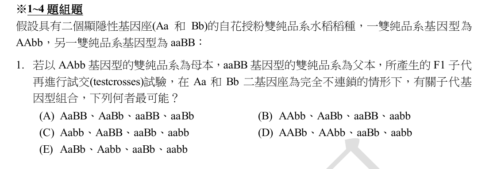
原卷PDF2 · 官方原答案PDF4 · 已核對生物釋疑PDF7下半部–9
官方採計：E 原答案：E
未列於已取得108生物釋疑PDF7下半部–9；依同年度原答案PDF4採計
主分類：Ch14 Mendel and the Gene Idea
14.1 / The Law of Independent Assortment
目錄行875；條目起始印刷頁274；實際目錄 PDF38
次分類：Ch14 Mendel and the Gene Idea
14.1 / The Law of Segregation
目錄行872；條目起始印刷頁271；實際目錄 PDF38
主分類理由：14.1 / The Law of Independent Assortment：雙因子雜交個體在兩基因獨立分配時產生四種等比例配子，測交直接讀出配子比例。
次分類理由：14.1 / The Law of Segregation：分離定律條目內的測交正文說明與aabb交配的判讀設計，Testcross未另列於目錄，不自造葉節點。
科學說明：原題共用背景AAbb×aaBB得AaBb；在未連鎖的題設下，與aabb測交得AaBb、Aabb、aaBb、aabb各1/4，採E。獨立分配是本題遺傳比例假設，不等於所有物理位置都在不同染色體。
來源涵蓋範圍：本地Campbell正文支援所列分類原理；原題及同年度釋疑的假設與措辭限制另見科學說明。
教材正文：印刷272／PDF321、印刷273／PDF322、印刷274／PDF323、印刷275／PDF324
補充來源：本題未另列課本外來源
另行比較：比較承載測交的分離定律條目與獨立分配條目何者為主；排除AaBb自交9:3:3:1。
四種等比例源於獨立分配，測交是讀出設計；兩個同章最小條目均保留。
結論：證據確認，分類疑義已解決。完整覆核紀錄
Q02 · 15.3 / How Linkage Affects Inheritance 正式分類
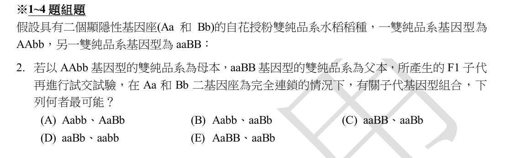
原卷PDF2 · 官方原答案PDF4 · 已核對生物釋疑PDF7下半部–9
官方採計：B 原答案：B
未列於已取得108生物釋疑PDF7下半部–9；依同年度原答案PDF4採計
主分類：Ch15 The Chromosomal Basis of Inheritance
15.3 / How Linkage Affects Inheritance
目錄行955；條目起始印刷頁301；實際目錄 PDF39
次分類：Ch15 The Chromosomal Basis of Inheritance
15.3 / Genetic Recombination and Linkage
目錄行958；條目起始印刷頁302；實際目錄 PDF39
主分類理由：15.3 / How Linkage Affects Inheritance：完全連鎖時同一染色體的等位基因組合整組傳遞。
次分類理由：15.3 / Genetic Recombination and Linkage：與雙隱性親本的後代用來辨認親本型及重組型。
科學說明：共用親本確定F1相位為Ab/aB；完全連鎖無交換時只產Ab、aB配子，與aabb測交得Aabb與aaBb，採B。不能把相位改成AB/ab。
來源涵蓋範圍：本地Campbell正文支援所列分類原理；原題及同年度釋疑的假設與措辭限制另見科學說明。
教材正文：印刷301／PDF350、印刷302／PDF351、印刷303／PDF352、印刷304／PDF353
補充來源：本題未另列課本外來源
Q03 · 38.1 / The Angiosperm Life Cycle: An Overview 正式分類
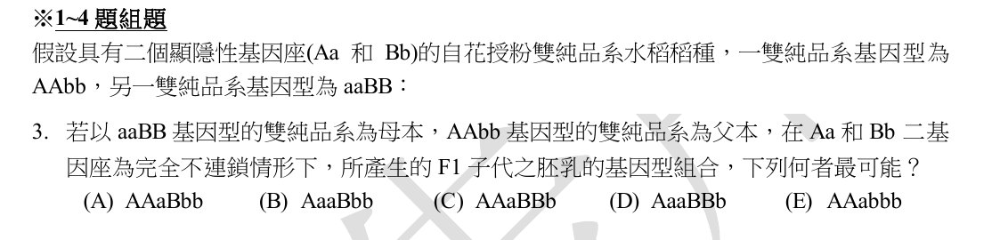
原卷PDF2 · 官方原答案PDF4 · 已核對生物釋疑PDF7下半部–9
官方採計：D 原答案：D
未列於已取得108生物釋疑PDF7下半部–9；依同年度原答案PDF4採計
主分類：Ch38 Angiosperm Reproduction and Biotechnology
38.1 / The Angiosperm Life Cycle: An Overview
目錄行2486；條目起始印刷頁826；實際目錄 PDF45
次分類：Ch38 Angiosperm Reproduction and Biotechnology
38.1 / Development of Female Gametophytes (Embryo Sacs)
目錄行2489；條目起始印刷頁826；實際目錄 PDF45
次分類：Ch38 Angiosperm Reproduction and Biotechnology
38.1 / Seed Development and Structure
目錄行2495；條目起始印刷頁828；實際目錄 PDF45
主分類理由：38.1 / The Angiosperm Life Cycle: An Overview：雙受精的精子與兩個極核融合產生胚乳，必須從被子植物生活史讀出核來源。
次分類理由：38.1 / Development of Female Gametophytes (Embryo Sacs)：母本胚囊由大孢子形成，提供兩個aB極核；38.1 / Seed Development and Structure：種子發育條目說明三倍體胚乳與二倍體胚的區別。
科學說明：母本aaBB的兩個極核各aB，父本AAbb精子Ab，合成AaaBBb，採D。AaBb是胚而非胚乳。Double Fertilization是正文小標，不是獨立目錄葉節點；主分類保留真實目錄的生活史概觀。
來源涵蓋範圍：本地Campbell正文支援所列分類原理；原題及同年度釋疑的假設與措辭限制另見科學說明。
教材正文：印刷826／PDF875、印刷827／PDF876、印刷828／PDF877
補充來源：本題未另列課本外來源
另行比較：比較配子形成、受精概觀與種子發育；排除直接以二倍體F1作答。
三個真實最小條目分別承載核來源、雙受精與胚乳結果；不創造目錄沒有的葉節點。
結論：證據確認，分類疑義已解決。完整覆核紀錄
Q04 · 15.3 / Mapping the Distance Between Genes Using Recombination Data: Scientific Inquiry 正式分類
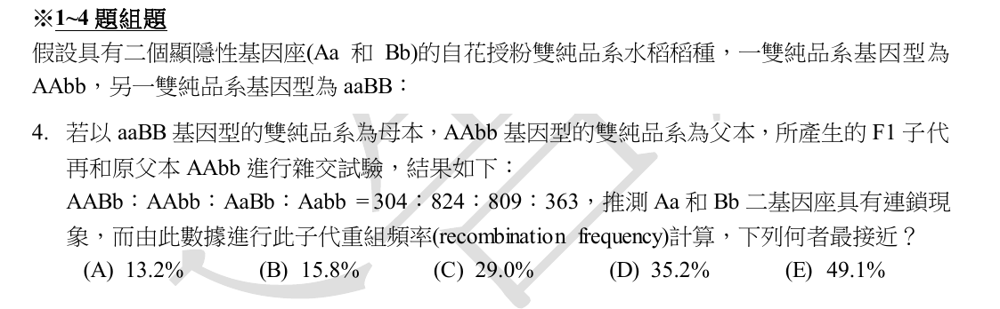
原卷PDF2 · 官方原答案PDF4 · 已核對生物釋疑PDF7下半部–9
官方採計：C 原答案：C
未列於已取得108生物釋疑PDF7下半部–9；依同年度原答案PDF4採計
主分類：Ch15 The Chromosomal Basis of Inheritance
15.3 / Mapping the Distance Between Genes Using Recombination Data: Scientific Inquiry
目錄行961；條目起始印刷頁305；實際目錄 PDF39
次分類：Ch15 The Chromosomal Basis of Inheritance
15.3 / Genetic Recombination and Linkage
目錄行958；條目起始印刷頁302；實際目錄 PDF39
主分類理由：15.3 / Mapping the Distance Between Genes Using Recombination Data: Scientific Inquiry：依重組後代數除以總後代數計算遺傳圖距。
次分類理由：15.3 / Genetic Recombination and Linkage：後代基因型須還原成F1配子，判別親本與重組型。
科學說明：本題回交AAbb，不是與aabb測交。AABb304、AAbb824、AaBb809、Aabb363對應F1的AB、Ab、aB、ab；重組為304+363，總2300，重組率29%，採C。
來源涵蓋範圍：本地Campbell正文支援所列分類原理；原題及同年度釋疑的假設與措辭限制另見科學說明。
教材正文：印刷302／PDF351、印刷303／PDF352、印刷304／PDF353、印刷305／PDF354、印刷306／PDF355
補充來源：本題未另列課本外來源
另行比較：比較與Q1測交的差別，查驗四種後代與配子對應。
回交親本雖不同，後代仍能辨認F1配子；按原題四筆數據得到29%。
結論：證據確認，分類疑義已解決。完整覆核紀錄
Q05 · 24.1 / The Biological Species Concept 正式分類
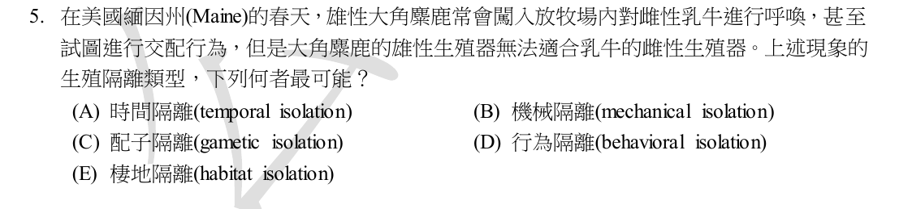
原卷PDF2 · 官方原答案PDF4 · 已核對生物釋疑PDF7下半部–9
官方採計：B 原答案：B
未列於已取得108生物釋疑PDF7下半部–9；依同年度原答案PDF4採計
主分類：Ch24 The Origin of Species
24.1 / The Biological Species Concept
目錄行1488；條目起始印刷頁507；實際目錄 PDF41
主分類理由：24.1 / The Biological Species Concept：嘗試交配但生殖器構造不合，是合子前機械隔離。
次分類理由：無另列最小次條目；教材的隔離類型依真正阻斷環節分類；原題明示構造阻礙。
科學說明：題述雄性大角麋鹿對雌性乳牛呼喚並嘗試交配，阻礙是構造不匹配，採B。不能僅因有呼喚就選行為隔離。緬因州情境按原題保留，未聲稱另外查證該具名自然史事件。
來源涵蓋範圍：本地Campbell正文支援所列分類原理；原題及同年度釋疑的假設與措辭限制另見科學說明。
教材正文：印刷507／PDF556、印刷508／PDF557、印刷509／PDF558、印刷510／PDF559
補充來源：本題未另列課本外來源
Q06 · 9.3 / The Citric Acid Cycle 正式分類
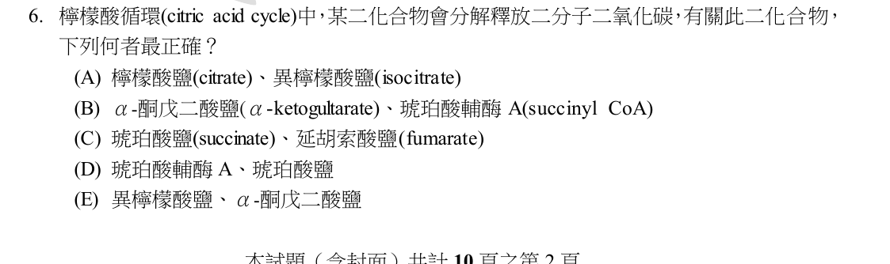
原卷PDF2 · 官方原答案PDF4 · 已核對生物釋疑PDF7下半部–9
官方採計：E 原答案：E
未列於已取得108生物釋疑PDF7下半部–9；依同年度原答案PDF4採計
主分類：Ch09 Cellular Respiration and Fermentation
9.3 / The Citric Acid Cycle
目錄行575；條目起始印刷頁172；實際目錄 PDF37
主分類理由：9.3 / The Citric Acid Cycle：檸檬酸循環兩個氧化脫羧步驟各放出一個二氧化碳。
次分類理由：無另列最小次條目；反應底物及兩次脫羧可直接對照教材循環圖，無須另列一般酵素條目。
科學說明：isocitrate→α-ketoglutarate及α-ketoglutarate→succinyl-CoA各釋出一個CO2，採E。原文α-ketogultarate的拼字照留於題圖及題文，科學說明使用α-ketoglutarate。
來源涵蓋範圍：本地Campbell正文支援所列分類原理；原題及同年度釋疑的假設與措辭限制另見科學說明。
教材正文：印刷172／PDF221、印刷173／PDF222
補充來源：本題未另列課本外來源
Q07 · 26.6 / The Important Role of Horizontal Gene Transfer 正式分類
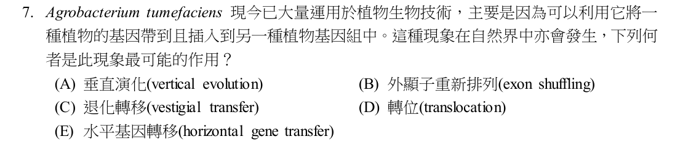
原卷PDF3 · 官方原答案PDF4 · 已核對生物釋疑PDF7下半部–9
官方採計：E 原答案：E
未列於已取得108生物釋疑PDF7下半部–9；依同年度原答案PDF4採計
主分類：Ch26 Phylogeny and the Tree of Life
26.6 / The Important Role of Horizontal Gene Transfer
目錄行1698；條目起始印刷頁568；實際目錄 PDF42
次分類：Ch38 Angiosperm Reproduction and Biotechnology
38.3 / Plant Biotechnology and Genetic Engineering
目錄行2527；條目起始印刷頁837；實際目錄 PDF45
主分類理由：26.6 / The Important Role of Horizontal Gene Transfer：跨物種而非親子世代的基因移入，是水平基因轉移。
次分類理由：38.3 / Plant Biotechnology and Genetic Engineering：農桿菌Ti質體是植物基因工程的具體載體應用。
科學說明：農桿菌將DNA移入植物，採E的horizontal gene transfer。不是染色體內移位，也不是exon shuffling；水平轉移的分類框架與Ti載體的實例分開定位。
來源涵蓋範圍：本地Campbell正文支援所列分類原理；原題及同年度釋疑的假設與措辭限制另見科學說明。
教材正文：印刷568／PDF617、印刷569／PDF618、印刷837／PDF886、印刷838／PDF887
補充來源：本題未另列課本外來源
Q08 · 26.4 / Gene Duplications and Gene Families 正式分類
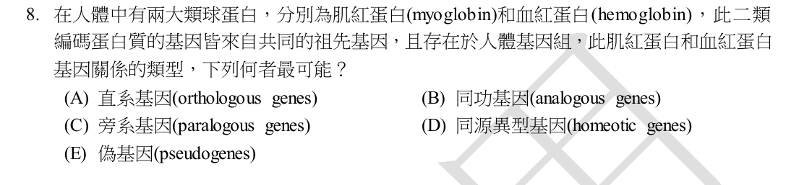
原卷PDF3 · 官方原答案PDF4 · 已核對生物釋疑PDF7下半部–9
官方採計：C 原答案：C
未列於已取得108生物釋疑PDF7下半部–9；依同年度原答案PDF4採計
主分類：Ch26 Phylogeny and the Tree of Life
26.4 / Gene Duplications and Gene Families
目錄行1675；條目起始印刷頁565；實際目錄 PDF42
主分類理由：26.4 / Gene Duplications and Gene Families：同一祖先基因複製並分化所生的基因是旁系同源。
次分類理由：無另列最小次條目；以複製事件和物種分化事件區分，落在實際旁系同源最小條目。
科學說明：同一物種的globin基因家族來自基因複製，為paralogous genes，採C。Orthologous指物種分化後的對應同源基因，不能僅因序列相似就互換。
來源涵蓋範圍：本地Campbell正文支援所列分類原理；原題及同年度釋疑的假設與措辭限制另見科學說明。
教材正文：印刷565／PDF614、印刷566／PDF615
補充來源：本題未另列課本外來源
另行比較：比較orthologous與paralogous及共同祖先的分化方式。
以複製事件和物種分化事件區分，落在實際旁系同源最小條目。
結論：證據確認，分類疑義已解決。完整覆核紀錄
Q09 · 35.1 / Common Types of Plant Cells 正式分類
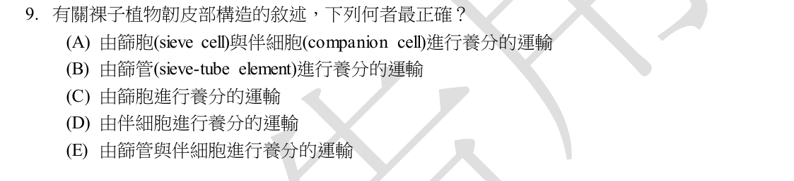
原卷PDF3 · 官方原答案PDF4 · 已核對生物釋疑PDF7下半部–9
官方採計：C 原答案：C
未列於已取得108生物釋疑PDF7下半部–9；依同年度原答案PDF4採計
主分類：Ch35 Vascular Plant Structure, Growth, and Development
35.1 / Common Types of Plant Cells
目錄行2289；條目起始印刷頁763；實際目錄 PDF44
次分類：Ch36 Resource Acquisition and Transport in Vascular Plants
36.5 / Movement from Sugar Sources to Sugar Sinks
目錄行2410；條目起始印刷頁799；實際目錄 PDF45
主分類理由：35.1 / Common Types of Plant Cells：維管組織細胞型的比較包含裸子植物的篩細胞與被子植物的篩管分子。
次分類理由：36.5 / Movement from Sugar Sources to Sugar Sinks：韌皮部運輸條目補足篩管分子與伴細胞的功能關係。
科學說明：裸子植物使用篩細胞，採C；被子植物典型為篩管分子與伴細胞。裸子植物可有相關白蛋白細胞，但不是被子植物的真伴細胞。分類依植物組織細胞型，不把裸子植物韌皮部說成完全沒有支持細胞。
來源涵蓋範圍：本地Campbell正文支援所列分類原理；原題及同年度釋疑的假設與措辭限制另見科學說明。
教材正文：印刷764／PDF813、印刷765／PDF814、印刷799／PDF848、印刷800／PDF849
補充來源：本題未另列課本外來源
另行比較：比較組織細胞型與一般韌皮部運輸，查驗伴細胞的範圍。
主條目保留裸子與被子植物的組織差異，次條目僅補功能，不越稱運輸段落完整列出各類群。
結論：證據確認，分類疑義已解決。完整覆核紀錄
Q10 · 17.2 / Molecular Components of Transcription 正式分類
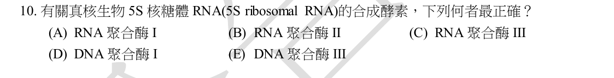
原卷PDF3 · 官方原答案PDF4 · 已核對生物釋疑PDF7下半部–9
官方採計：C 原答案：C
未列於已取得108生物釋疑PDF7下半部–9；依同年度原答案PDF4採計
主分類：Ch17 Gene Expression: From Gene to Protein
17.2 / Molecular Components of Transcription
目錄行1049；條目起始印刷頁342；實際目錄 PDF39
主分類理由：17.2 / Molecular Components of Transcription：題目直接辨別轉錄所使用的RNA聚合酶類型。
次分類理由：無另列最小次條目；分類為轉錄分子組件；特定聚合酶對應有另列補充證據。
科學說明：真核細胞核內5S rRNA由RNA polymerase III轉錄，採C。Campbell印刷342概述三種核RNA聚合酶，詳述Pol II；5S與Pol III的明確對應另由Cooper教材及原始研究補證，不冒稱Campbell此頁已逐項列出。
來源涵蓋範圍：本地Campbell支援所列分類框架；具名外部事件／機制／科學界線由列示來源補充，實讀範圍見來源紀錄。
教材正文：印刷342／PDF391、印刷343／PDF392
補充來源：S01
另行比較：比較rRNA加工與RNA合成機器，確認5S不是Pol I的大前驅物產品。
分類為轉錄分子組件；特定聚合酶對應有另列補充證據。
結論：證據確認，分類疑義已解決。完整覆核紀錄
Q11 · 26.5 / Molecular Clocks 正式分類
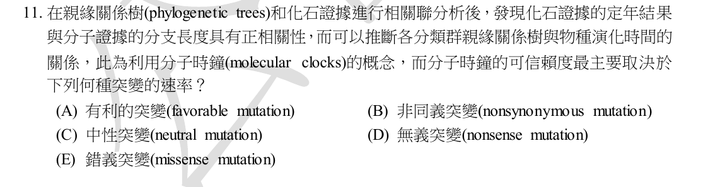
原卷PDF3 · 官方原答案PDF4 · 已核對生物釋疑PDF7下半部–9
官方採計：C 原答案：C
未列於已取得108生物釋疑PDF7下半部–9；依同年度原答案PDF4採計
主分類：Ch26 Phylogeny and the Tree of Life
26.5 / Molecular Clocks
目錄行1685；條目起始印刷頁566；實際目錄 PDF42
次分類：Ch26 Phylogeny and the Tree of Life
26.3 / Phylogenetic Trees with Proportional Branch Lengths
目錄行1662；條目起始印刷頁561；實際目錄 PDF42
主分類理由：26.5 / Molecular Clocks：分子時鐘以累積序列差異估計分化時間，中性差異較能代表持續累積。
次分類理由：26.3 / Phylogenetic Trees with Proportional Branch Lengths：以分支長度表示序列變化或校準時間的親緣樹，是題述化石年代與分支長度相關的資料呈現。
科學說明：依中性突變累積的分子鐘推估分化，採C。不同基因、類群的速率可不同，仍需校準；非同義替換不是一律中性，分子時鐘也不是絕對均速的精確年表。
來源涵蓋範圍：本地Campbell正文支援所列分類原理；原題及同年度釋疑的假設與措辭限制另見科學說明。
教材正文：印刷561／PDF610、印刷562／PDF611、印刷566／PDF615、印刷567／PDF616
補充來源：本題未另列課本外來源
Q12 · 7.4 / Cotransport: Coupled Transport by a Membrane Protein 正式分類
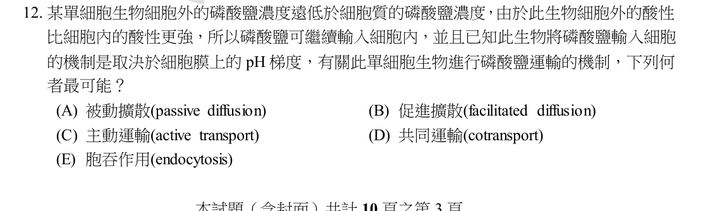
原卷PDF3 · 官方原答案PDF4 · 已核對生物釋疑PDF7下半部–9
官方採計：D 原答案：D
未列於已取得108生物釋疑PDF7下半部–9；依同年度原答案PDF4採計
主分類：Ch07 Membrane Structure and Function
7.4 / Cotransport: Coupled Transport by a Membrane Protein
目錄行456；條目起始印刷頁138；實際目錄 PDF36
次分類：Ch07 Membrane Structure and Function
7.4 / The Need for Energy in Active Transport
目錄行450；條目起始印刷頁136；實際目錄 PDF36
主分類理由：7.4 / Cotransport: Coupled Transport by a Membrane Protein：H+順梯度流動與磷酸鹽逆梯度同向搬運，是共同運輸中的同向運輸。
次分類理由：7.4 / The Need for Energy in Active Transport：質子梯度由主動運輸建立，為次級運輸提供能量。
科學說明：H+順梯度帶動磷酸鹽逆梯度入胞，採D共同運輸(cotransport)，其同向形式可稱symport；原選項C是active transport的較廣類型，並非寫secondary active transport。共同運輸蛋白本身不必直接水解ATP。
來源涵蓋範圍：本地Campbell正文支援所列分類原理；原題及同年度釋疑的假設與措辭限制另見科學說明。
教材正文：印刷137／PDF186、印刷138／PDF187
補充來源：本題未另列課本外來源
Q13 · 23.4 / Natural Selection: A Closer Look 正式分類
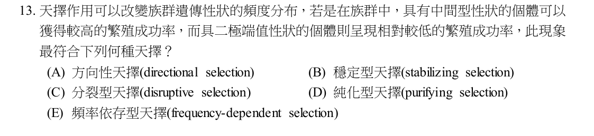
原卷PDF4 · 官方原答案PDF4 · 已核對生物釋疑PDF7下半部–9
官方採計：B 原答案：B
未列於已取得108生物釋疑PDF7下半部–9；依同年度原答案PDF4採計
主分類：Ch23 The Evolution of Populations
23.4 / Natural Selection: A Closer Look
目錄行1465；條目起始印刷頁497；實際目錄 PDF41
主分類理由：23.4 / Natural Selection: A Closer Look：中間表型生存較佳而兩端受排除，是穩定化選擇。
次分類理由：無另列最小次條目；按表型分布及選汰方向判別，避免把穩定化等同平衡選擇。
科學說明：中間表型具有較高適合度，採B的stabilizing selection；不是維持多種等位基因的balancing selection，也不是稀少型優勢的頻率依賴選擇。
來源涵蓋範圍：本地Campbell正文支援所列分類原理；原題及同年度釋疑的假設與措辭限制另見科學說明。
教材正文：印刷497／PDF546、印刷498／PDF547
補充來源：本題未另列課本外來源
另行比較：比較stabilizing與balancing的中文近似詞。
按表型分布及選汰方向判別，避免把穩定化等同平衡選擇。
結論：證據確認，分類疑義已解決。完整覆核紀錄
Q14 · 37.3 / Epiphytes, Parasitic Plants, and Carnivorous Plants 正式分類
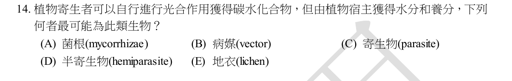
原卷PDF4 · 官方原答案PDF4 · 已核對生物釋疑PDF7下半部–9
官方採計：D 原答案：D
未列於已取得108生物釋疑PDF7下半部–9；依同年度原答案PDF4採計
主分類：Ch37 Soil and Plant Nutrition
37.3 / Epiphytes, Parasitic Plants, and Carnivorous Plants
目錄行2469；條目起始印刷頁818；實際目錄 PDF45
次分類：Ch54 Community Ecology
54.1 / Exploitation
目錄行3601；條目起始印刷頁1217；實際目錄 PDF50
主分類理由：37.3 / Epiphytes, Parasitic Plants, and Carnivorous Plants：能光合作用但從宿主取得水與礦物質的植物屬半寄生植物。
次分類理由：54.1 / Exploitation：寄生是此資源關係在群集交互作用中的類型。
科學說明：可自行光合、仍取用宿主水分礦物質，採D的hemiparasite；C寄生植物為較廣類別。附生植物只是附著位置，不能替代營養依賴的寄生判定。
來源涵蓋範圍：本地Campbell正文支援所列分類原理；原題及同年度釋疑的假設與措辭限制另見科學說明。
教材正文：印刷818／PDF867、印刷819／PDF868、印刷1219／PDF1268、印刷1220／PDF1269
補充來源：本題未另列課本外來源
Q15 · 52.2 / General Features of Terrestrial Biomes 正式分類
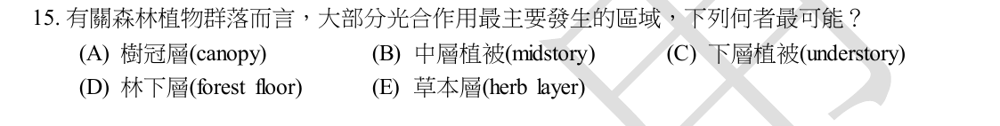
原卷PDF4 · 官方原答案PDF4 · 已核對生物釋疑PDF7下半部–9
官方採計：A 原答案：A
未列於已取得108生物釋疑PDF7下半部–9；依同年度原答案PDF4採計
主分類：Ch52 An Introduction to Ecology and the Biosphere
52.2 / General Features of Terrestrial Biomes
目錄行3493；條目起始印刷頁1172；實際目錄 PDF49
次分類：Ch36 Resource Acquisition and Transport in Vascular Plants
36.1 / Shoot Architecture and Light Capture
目錄行2349；條目起始印刷頁785；實際目錄 PDF45
主分類理由：52.2 / General Features of Terrestrial Biomes：森林的垂直分層使樹冠集中接受光照，回答主要光合作用位置。
次分類理由：36.1 / Shoot Architecture and Light Capture：莖葉構造與排列決定截光，是樹冠光合優勢的功能連結。
科學說明：森林樹冠通常得到最多光並集中葉面，題設採A。此為一般森林分層推論，不是聲稱任何季節、林型與每一片葉的光合速率都必然最高。
來源涵蓋範圍：本地Campbell正文支援所列分類原理；原題及同年度釋疑的假設與措辭限制另見科學說明。
教材正文：印刷785／PDF834、印刷786／PDF835、印刷1172／PDF1221、印刷1174／PDF1223
補充來源：本題未另列課本外來源
另行比較：比較森林分層與光合作用反應機制，確認題目問位置。
真實目錄的陸域生物群系一般特徵條目承載分層，莖葉截光次條目補因果。
結論：證據確認，分類疑義已解決。完整覆核紀錄
Q16 · 17.5 / Types of Small-Scale Mutations 正式分類
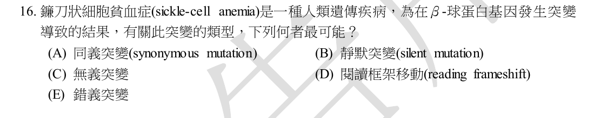
原卷PDF4 · 官方原答案PDF4 · 已核對生物釋疑PDF7下半部–9
官方採計：E 原答案：E
未列於已取得108生物釋疑PDF7下半部–9；依同年度原答案PDF4採計
主分類：Ch17 Gene Expression: From Gene to Protein
17.5 / Types of Small-Scale Mutations
目錄行1085；條目起始印刷頁357；實際目錄 PDF39
次分類：Ch14 Mendel and the Gene Idea
14.4 / Recessively Inherited Disorders
目錄行911；條目起始印刷頁285；實際目錄 PDF38
主分類理由：17.5 / Types of Small-Scale Mutations：β-globin單一鹼基替換使谷胺酸改為纈胺酸，是錯義替換。
次分類理由：14.4 / Recessively Inherited Disorders：鐮刀型血球疾病是這種分子改變的遺傳性狀實例。
科學說明：胺基酸Glu變Val而非終止密碼或閱讀框位移，採E的missense mutation。分子突變類型為主，疾病遺傳為次，不引入題目未問的治療推論。
來源涵蓋範圍：本地Campbell正文支援所列分類原理；原題及同年度釋疑的假設與措辭限制另見科學說明。
教材正文：印刷285／PDF334、印刷286／PDF335、印刷357／PDF406、印刷358／PDF407、印刷359／PDF408
補充來源：本題未另列課本外來源
Q17 · 15.4 / Human Conditions Due to Chromosomal Alterations 正式分類
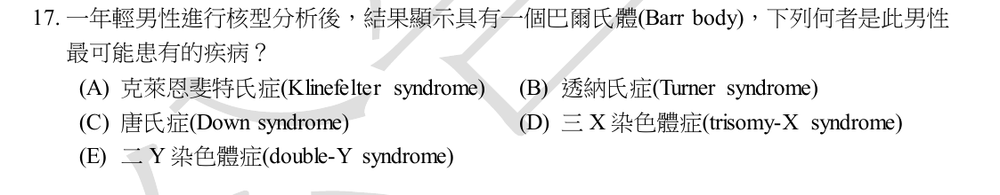
原卷PDF4 · 官方原答案PDF4 · 已核對生物釋疑PDF7下半部–9
官方採計：A 原答案：A
未列於已取得108生物釋疑PDF7下半部–9；依同年度原答案PDF4採計
主分類：Ch15 The Chromosomal Basis of Inheritance
15.4 / Human Conditions Due to Chromosomal Alterations
目錄行974；條目起始印刷頁308；實際目錄 PDF39
次分類：Ch15 The Chromosomal Basis of Inheritance
15.2 / X Inactivation in Female Mammals
目錄行948；條目起始印刷頁300；實際目錄 PDF39
主分類理由：15.4 / Human Conditions Due to Chromosomal Alterations：男性細胞有一個Barr body，典型對應多一條X染色體的XXY。
次分類理由：15.2 / X Inactivation in Female Mammals：X染色體失活解釋Barr body數量與X數的關係。
科學說明：按考題典型核型推論XXY Klinefelter，採A；Barr body數通常為X染色體數減一。這是題設推理，單憑此現象不替代實際核型診斷或排除嵌合情況。
來源涵蓋範圍：本地Campbell正文支援所列分類原理；原題及同年度釋疑的假設與措辭限制另見科學說明。
教材正文：印刷300／PDF349、印刷301／PDF350、印刷308／PDF357、印刷309／PDF358
補充來源：本題未另列課本外來源
Q18 · 25.3 / The Origin of Multicellularity 正式分類
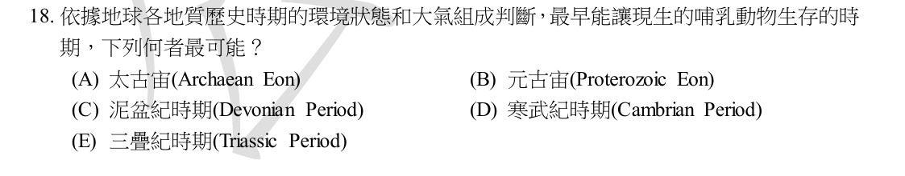
官方採計：D 原答案：D
維持原答案D
主分類：Ch25 The History of Life on Earth
25.3 / The Origin of Multicellularity
目錄行1573；條目起始印刷頁535；實際目錄 PDF41
次分類：Ch25 The History of Life on Earth
25.3 / The First Single-Celled Organisms
目錄行1570；條目起始印刷頁533；實際目錄 PDF41
次分類：Ch25 The History of Life on Earth
25.3 / The Colonization of Land
目錄行1576；條目起始印刷頁536；實際目錄 PDF41
主分類理由：25.3 / The Origin of Multicellularity：考題以氧氣環境與多細胞動物演化的時間框架判別較早可行時段。
次分類理由：25.3 / The First Single-Celled Organisms：早期單細胞生命與氧氣變化提供前史比較；25.3 / The Colonization of Land：登陸條目用於排除把較晚陸域演化當作最早門檻。
科學說明：官方採D寒武紀，釋疑以早期足夠氧氣的假想可生存條件解釋，並非哺乳類實際起源年代。Campbell12印刷535–536討論寒武紀及氧氣假說；原題未給物種、氧分壓與食物，不能證明現代哺乳類都能在當時存活。官方引Global11印刷590，與本地12頁碼分開。
來源涵蓋範圍：本地Campbell支援所列分類框架；具名外部事件／機制／科學界線由列示來源補充，實讀範圍見來源紀錄。
教材正文：印刷533／PDF582、印刷534／PDF583、印刷535／PDF584、印刷536／PDF585、印刷537／PDF586
補充來源：S02
另行比較：比較哺乳類實際起源與題目的假想生存環境；核對寒武紀氧氣假說的限制。
分類落在生命史與動物多細胞化，採計D照留，科學上不把假想門檻當成實測存活或哺乳類起源。
結論：證據確認，分類疑義已解決。完整覆核紀錄
Q19 · 43.1 / Innate Immunity of Vertebrates 正式分類
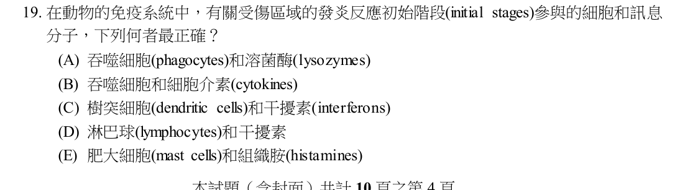
原卷PDF4 · 官方原答案PDF4 · 釋疑PDF7、釋疑PDF8
官方採計：E 原答案：E
維持原答案E
主分類：Ch43 The Immune System
43.1 / Innate Immunity of Vertebrates
目錄行2870；條目起始印刷頁954；實際目錄 PDF47
主分類理由：43.1 / Innate Immunity of Vertebrates：肥大細胞釋放組織胺，早期引發血管變化與發炎反應。
次分類理由：無另列最小次條目；在同一發炎最小條目內可解釋答案並保留官方概括用語的範圍差異。
科學說明：採E的mast cell與histamine。巨噬細胞等也釋出細胞激素參與發炎；官方用語若把mast cell統稱主要吞噬細胞，須與教材主要吞噬細胞的中性球、巨噬細胞分開。釋疑圖跨PDF7與8，兩頁都保留。
來源涵蓋範圍：本地Campbell正文支援所列分類原理；原題及同年度釋疑的假設與措辭限制另見科學說明。
教材正文：印刷954／PDF1003、印刷955／PDF1004、印刷956／PDF1005、印刷957／PDF1006
補充來源：本題未另列課本外來源
另行比較：比較發炎起始介質與細胞的主要吞噬功能，不把所有免疫細胞視為同類。
在同一發炎最小條目內可解釋答案並保留官方概括用語的範圍差異。
結論：證據確認，分類疑義已解決。完整覆核紀錄
Q20 · 54.1 / Exploitation 正式分類
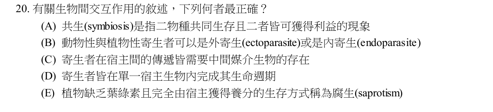
原卷PDF5 · 官方原答案PDF4 · 已核對生物釋疑PDF7下半部–9
官方採計：B 原答案：B
未列於已取得108生物釋疑PDF7下半部–9；依同年度原答案PDF4採計
主分類：Ch54 Community Ecology
54.1 / Exploitation
目錄行3601；條目起始印刷頁1217；實際目錄 PDF50
次分類：Ch37 Soil and Plant Nutrition
37.3 / Epiphytes, Parasitic Plants, and Carnivorous Plants
目錄行2469；條目起始印刷頁818；實際目錄 PDF45
主分類理由：54.1 / Exploitation：寄生可依寄生者位於宿主體內或表面區分，不限於動物。
次分類理由：37.3 / Epiphytes, Parasitic Plants, and Carnivorous Plants：植物寄生的水分與養分取得方式補足跨界例子。
科學說明：採B，植物及動物都可有體外、體內寄生者。植物體內寄生以Pilostyles原始研究補證；不能把symbiosis一律譯為互利，也不能認為所有寄生者都必有媒介或僅一宿主。無葉綠素且取宿主營養並不等於腐生。
來源涵蓋範圍：本地Campbell支援所列分類框架；具名外部事件／機制／科學界線由列示來源補充，實讀範圍見來源紀錄。
教材正文：印刷818／PDF867、印刷819／PDF868、印刷1217／PDF1266、印刷1218／PDF1267、印刷1219／PDF1268、印刷1220／PDF1269
補充來源：S09
另行比較：比較教材動物常見內外寄生例子與植物可否同樣存在。
植物體內寄生有獨立解剖/基因組證據，解決僅靠動物例子不能推出植物的疑義。
結論：證據確認，分類疑義已解決。完整覆核紀錄
Q21 · 54.2 / Species with a Large Impact 正式分類
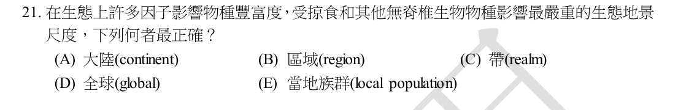
官方採計：E 原答案：E
維持原答案E
主分類：Ch54 Community Ecology
54.2 / Species with a Large Impact
目錄行3620；條目起始印刷頁1225；實際目錄 PDF50
次分類：Ch54 Community Ecology
54.2 / Species Diversity
目錄行3611；條目起始印刷頁1222；實際目錄 PDF50
次分類：Ch54 Community Ecology
54.2 / Bottom-Up and Top-Down Controls
目錄行3623；條目起始印刷頁1226；實際目錄 PDF50
主分類理由：54.2 / Species with a Large Impact：關鍵捕食者會透過食物網對當地群集物種組成產生不成比例的影響。
次分類理由：54.2 / Species Diversity：物種多樣性界定分析對象；54.2 / Bottom-Up and Top-Down Controls：自上而下控制連結捕食者與營養階層。
科學說明：官方採E並以local population層級解釋。科學上多物種多樣性屬群集，單一族群不是物種豐富度單位；題目英文local population照留。捕食者效應有情境與尺度依賴，不是所有研究皆有全球至當地的固定大小排序。
來源涵蓋範圍：本地Campbell正文支援所列分類原理；原題及同年度釋疑的假設與措辭限制另見科學說明。
教材正文：印刷1222／PDF1271、印刷1225／PDF1274、印刷1226／PDF1275、印刷1227／PDF1276
補充來源：本題未另列課本外來源
另行比較：比較關鍵種局部群集效應與物種多樣性尺度，查核population/community用詞。
分類為關鍵種及群集食物網效應，保留官方層級說法但不提升為普遍定律。
結論：證據確認，分類疑義已解決。完整覆核紀錄
Q22 · 15.5 / Inheritance of Organelle Genes 正式分類
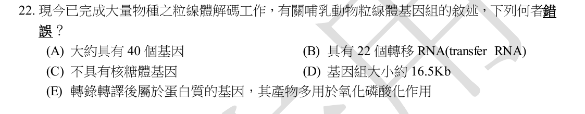
原卷PDF5 · 官方原答案PDF4 · 已核對生物釋疑PDF7下半部–9
官方採計：C 原答案：C
未列於已取得108生物釋疑PDF7下半部–9；依同年度原答案PDF4採計
主分類：Ch15 The Chromosomal Basis of Inheritance
15.5 / Inheritance of Organelle Genes
目錄行984；條目起始印刷頁311；實際目錄 PDF39
次分類：Ch06 A Tour of the Cell
6.5 / The Evolutionary Origins of Mitochondria and Chloroplasts
目錄行362；條目起始印刷頁109；實際目錄 PDF36
主分類理由：15.5 / Inheritance of Organelle Genes：粒線體有自身基因並編碼部分蛋白與RNA，應依胞器基因內容判斷。
次分類理由：6.5 / The Evolutionary Origins of Mitochondria and Chloroplasts：粒線體及葉綠體的構造與遺傳半自主性補充背景。
科學說明：哺乳類粒線體DNA約16.5kb、37個基因，含13個蛋白基因、22個tRNA、2個rRNA；原題約40為近似。採C，若ribosomal genes指rRNA基因，聲稱沒有即錯；若指核糖體蛋白基因則語義不同，原題用詞照留。Campbell給分類框架，具體數目由Cooper及Brown教材補證。
來源涵蓋範圍：本地Campbell支援所列分類框架；具名外部事件／機制／科學界線由列示來源補充，實讀範圍見來源紀錄。
教材正文：印刷109／PDF158、印刷110／PDF159、印刷311／PDF360
補充來源：S03
另行比較：比較rRNA基因與核糖體蛋白基因，核對約40的數量含義。
以題設通常的rRNA解讀採C，保留歧義而不將胞器說成完全沒有核糖體相關基因。
結論：證據確認，分類疑義已解決。完整覆核紀錄
Q23 · 45.1 / Intercellular Information Flow 正式分類
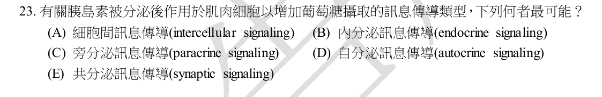
官方採計：B 原答案：B
維持原答案B
主分類：Ch45 Hormones and the Endocrine System
45.1 / Intercellular Information Flow
目錄行2998；條目起始印刷頁1000；實際目錄 PDF47
次分類：Ch11 Cell Communication
11.1 / Local and Long-Distance Signaling
目錄行698；條目起始印刷頁215；實際目錄 PDF38
主分類理由：45.1 / Intercellular Information Flow：胰島素進入血液到遠端作用，是內分泌訊號的運送方式。
次分類理由：11.1 / Local and Long-Distance Signaling：細胞訊號章的局部與長距離傳訊為上位分類。
科學說明：胰島素透過循環傳遞到標的細胞，採B endocrine。A intercellular為更廣類型；是否有受體或回饋不會把題述遠端作用改成autocrine。E原題把synaptic signaling譯為共分泌，通常稱突觸傳訊；原題仍照存。
來源涵蓋範圍：本地Campbell正文支援所列分類原理；原題及同年度釋疑的假設與措辭限制另見科學說明。
教材正文：印刷215／PDF264、印刷216／PDF265、印刷1000／PDF1049、印刷1001／PDF1050
補充來源：本題未另列課本外來源
另行比較：比較內分泌與細胞間傳訊，避免另列題目未問的血鈣或腸道激素調節。
只保留內分泌傳訊與長距離訊號兩個直接有用的真實條目。
結論：證據確認，分類疑義已解決。完整覆核紀錄
Q24 · 25.4 / Mass Extinctions 正式分類
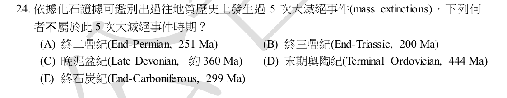
原卷PDF5 · 官方原答案PDF4 · 已核對生物釋疑PDF7下半部–9
官方採計：E 原答案：E
未列於已取得108生物釋疑PDF7下半部–9；依同年度原答案PDF4採計
主分類：Ch25 The History of Life on Earth
25.4 / Mass Extinctions
目錄行1586；條目起始印刷頁540；實際目錄 PDF41
主分類理由：25.4 / Mass Extinctions：辨認顯生宙五次大型滅絕事件及其地質時段。
次分類理由：無另列最小次條目；依事件對應時段即可分類及作答，來源年代差異不刪改。
科學說明：五大滅絕為奧陶紀末、晚泥盆紀、二疊紀末、三疊紀末及白堊紀末；不包括石炭紀末，採E。原題給的近似古老年代仍保留，不以新的年代估計默改題文。
來源涵蓋範圍：本地Campbell正文支援所列分類原理；原題及同年度釋疑的假設與措辭限制另見科學說明。
教材正文：印刷540／PDF589、印刷541／PDF590、印刷542／PDF591
補充來源：本題未另列課本外來源
Q25 · 26.1 / Applying Phylogenies 正式分類
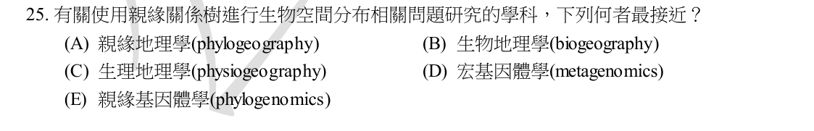
原卷PDF5 · 官方原答案PDF4 · 已核對生物釋疑PDF7下半部–9
官方採計：A 原答案：A
未列於已取得108生物釋疑PDF7下半部–9；依同年度原答案PDF4採計
主分類：Ch26 Phylogeny and the Tree of Life
26.1 / Applying Phylogenies
目錄行1639；條目起始印刷頁557；實際目錄 PDF42
次分類：Ch22 Descent with Modification: A Darwinian View of Life
22.3 / Biogeography
目錄行1418；條目起始印刷頁482；實際目錄 PDF41
主分類理由：26.1 / Applying Phylogenies：將親緣樹與地理分布合用以重建族群歷史，對應親緣樹應用。
次分類理由：22.3 / Biogeography：生物地理條目補充歷史事件與地理分布的連結。
科學說明：採A phylogeography，重點為遺傳譜系的空間及歷史分布。Biogeography較廣；本地目錄沒有獨立Phylogeography葉條目，使用26.1親緣樹應用搭配22.3生物地理，並列Knowles定義補證。
來源涵蓋範圍：本地Campbell支援所列分類框架；具名外部事件／機制／科學界線由列示來源補充，實讀範圍見來源紀錄。
教材正文：印刷482／PDF531、印刷483／PDF532、印刷555／PDF604、印刷556／PDF605、印刷557／PDF606
補充來源：S04
另行比較：比較生物地理與親緣地理，確認不能創造教材目錄不存在的專名葉節點。
以兩個現存條目承載跨章概念，外部來源明示補足專名定義。
結論：證據確認，分類疑義已解決。完整覆核紀錄
Q26 · 6.3 / The Nucleus: Information Central 正式分類
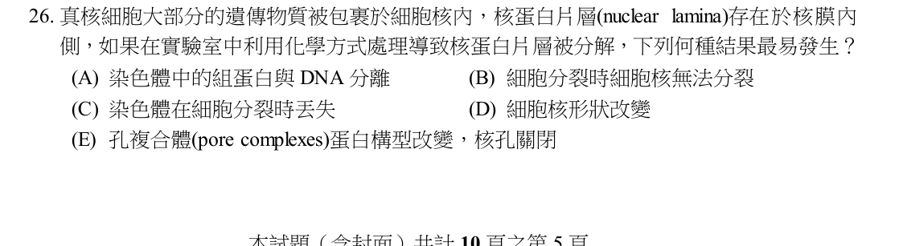
原卷PDF5 · 官方原答案PDF4 · 已核對生物釋疑PDF7下半部–9
官方採計：D 原答案：D
未列於已取得108生物釋疑PDF7下半部–9；依同年度原答案PDF4採計
主分類：Ch06 A Tour of the Cell
6.3 / The Nucleus: Information Central
目錄行333；條目起始印刷頁102；實際目錄 PDF36
次分類：Ch06 A Tour of the Cell
6.6 / Components of the Cytoskeleton
目錄行381；條目起始印刷頁113；實際目錄 PDF36
主分類理由：6.3 / The Nucleus: Information Central：核纖層支撐核膜內側並維持細胞核形狀。
次分類理由：6.6 / Components of the Cytoskeleton：中間絲類核纖層蛋白的結構角色連結細胞骨架。
科學說明：核纖層受損可直接破壞核形狀與支撐，採D。它不是核孔封閉開關，也不等於組蛋白或DNA本身被分解。
來源涵蓋範圍：本地Campbell正文支援所列分類原理；原題及同年度釋疑的假設與措辭限制另見科學說明。
教材正文：印刷102／PDF151、印刷103／PDF152、印刷113／PDF162、印刷114／PDF163、印刷117／PDF166
補充來源：本題未另列課本外來源
Q27 · 23.2 / The Hardy-Weinberg Equation 正式分類
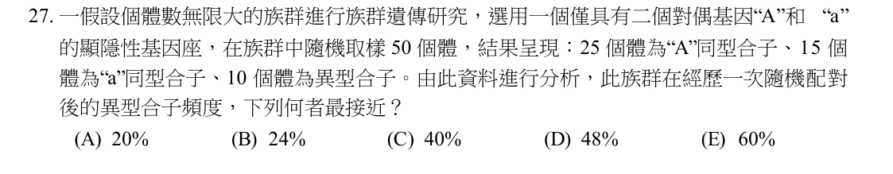
原卷PDF6 · 官方原答案PDF4 · 已核對生物釋疑PDF7下半部–9
官方採計：D 原答案：D
未列於已取得108生物釋疑PDF7下半部–9；依同年度原答案PDF4採計
主分類：Ch23 The Evolution of Populations
23.2 / The Hardy-Weinberg Equation
目錄行1445；條目起始印刷頁490；實際目錄 PDF41
次分類：Ch23 The Evolution of Populations
23.2 / Gene Pools and Allele Frequencies
目錄行1442；條目起始印刷頁490；實際目錄 PDF41
主分類理由：23.2 / The Hardy-Weinberg Equation：由當代等位基因頻率計算隨機交配下一代的2pq。
次分類理由：23.2 / Gene Pools and Allele Frequencies：先從基因型人數推導p與q，而不是直接用目前異型合子比例。
科學說明：50個體中25AA、10Aa、15aa，p=(50+10)/100=0.6，q=0.4；隨機交配且無其他改變頻率的因素時，下一代Aa=2pq=0.48，採D；目前10/50=0.20不是下一代答案。
來源涵蓋範圍：本地Campbell正文支援所列分類原理；原題及同年度釋疑的假設與措辭限制另見科學說明。
教材正文：印刷490／PDF539、印刷491／PDF540、印刷492／PDF541、印刷493／PDF542
補充來源：本題未另列課本外來源
另行比較：比較當代觀測比例與下一代Hardy-Weinberg預期。
重新計算100個等位基因及2pq，分類疑義已由原數據解決。
結論：證據確認，分類疑義已解決。完整覆核紀錄
Q28 · 35.2 / Different meristems generate new cells for primary and secondary growth 正式分類
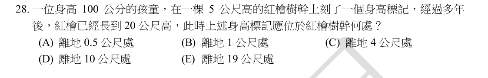
原卷PDF6 · 官方原答案PDF4 · 已核對生物釋疑PDF7下半部–9
官方採計：B 原答案：B
未列於已取得108生物釋疑PDF7下半部–9；依同年度原答案PDF4採計
主分類：Ch35 Vascular Plant Structure, Growth, and Development
35.2 / Different meristems generate new cells for primary and secondary growth
目錄行2292；條目起始印刷頁766；實際目錄 PDF44
次分類：Ch35 Vascular Plant Structure, Growth, and Development
35.3 / Primary Growth of Shoots
目錄行2303；條目起始印刷頁769；實際目錄 PDF44
主分類理由：35.2 / Different meristems generate new cells for primary and secondary growth：植株長高主要在頂端分生組織形成新的伸長區，既有樹幹位置不按總高同比上移。
次分類理由：35.3 / Primary Growth of Shoots：根與莖的初生生長提供頂端生長位置的具體機制。
科學說明：原先距地1m的樹幹記號按題設仍約1m，採B。樹皮增粗、裂解或脫落可改變記號可見性，但不是因樹長高而按比例升高。主條目Concept35.2在真實目錄沒有再列子條目，可作最小終端概念。
來源涵蓋範圍：本地Campbell正文支援所列分類原理；原題及同年度釋疑的假設與措辭限制另見科學說明。
教材正文：印刷766／PDF815、印刷767／PDF816、印刷769／PDF818、印刷770／PDF819
補充來源：本題未另列課本外來源
另行比較：比較全株拉長與頂端局部生長，檢查非葉標題是否合法。
本地PDF目錄確認35.2為終端概念；保留初生生長次條目，未任意造分生組織葉節點。
結論：證據確認，分類疑義已解決。完整覆核紀錄
Q29 · 6.4 / The Endoplasmic Reticulum: Biosynthetic Factory 正式分類
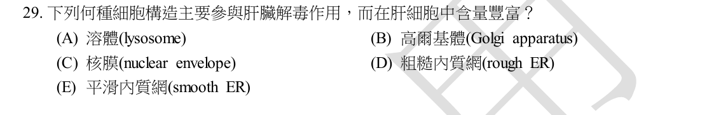
原卷PDF6 · 官方原答案PDF4 · 已核對生物釋疑PDF7下半部–9
官方採計：E 原答案：E
未列於已取得108生物釋疑PDF7下半部–9；依同年度原答案PDF4採計
主分類：Ch06 A Tour of the Cell
6.4 / The Endoplasmic Reticulum: Biosynthetic Factory
目錄行343；條目起始印刷頁104；實際目錄 PDF36
主分類理由：6.4 / The Endoplasmic Reticulum: Biosynthetic Factory：平滑內質網參與藥物與毒物解毒，肝細胞相應結構發達。
次分類理由：無另列最小次條目；解毒是平滑內質網的直接正文功能，無需增加肝臟整體消化分類。
科學說明：採E smooth ER；粗糙內質網主要與分泌/膜蛋白生產相關，高基氏體處理和分送，不是題述主要解毒部位。
來源涵蓋範圍：本地Campbell正文支援所列分類原理；原題及同年度釋疑的假設與措辭限制另見科學說明。
教材正文：印刷104／PDF153、印刷105／PDF154
補充來源：本題未另列課本外來源
另行比較：比較光滑與粗糙內質網，確認肝細胞情境不改變胞器功能。
解毒是平滑內質網的直接正文功能，無需增加肝臟整體消化分類。
結論：證據確認，分類疑義已解決。完整覆核紀錄
Q30 · 12.2 / The Mitotic Spindle: A Closer Look 正式分類
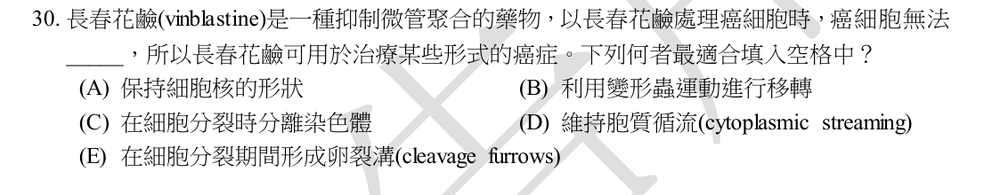
原卷PDF6 · 官方原答案PDF4 · 已核對生物釋疑PDF7下半部–9
官方採計：C 原答案：C
未列於已取得108生物釋疑PDF7下半部–9；依同年度原答案PDF4採計
主分類：Ch12 The Cell Cycle
12.2 / The Mitotic Spindle: A Closer Look
目錄行773；條目起始印刷頁240；實際目錄 PDF38
次分類：Ch06 A Tour of the Cell
6.6 / Components of the Cytoskeleton
目錄行381；條目起始印刷頁113；實際目錄 PDF36
主分類理由：12.2 / The Mitotic Spindle: A Closer Look：微管動態受阻使有絲分裂紡錘體無法正常移動染色體。
次分類理由：6.6 / Components of the Cytoskeleton：微管的tubulin組成與動態不同於肌動蛋白及中間絲。
科學說明：依題設tubulin聚合受抑，最直接阻礙染色體分離，採C；其他動作常依賴肌動蛋白或中間絲。僅按題設藥理機制判斷，不延伸臨床劑量與用藥建議。
來源涵蓋範圍：本地Campbell正文支援所列分類原理；原題及同年度釋疑的假設與措辭限制另見科學說明。
教材正文：印刷113／PDF162、印刷114／PDF163、印刷240／PDF289、印刷241／PDF290、印刷242／PDF291
補充來源：本題未另列課本外來源
Q31 · 11.3 / Small Molecules and Ions as Second Messengers 正式分類
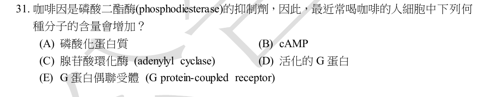
原卷PDF6 · 官方原答案PDF4 · 已核對生物釋疑PDF7下半部–9
官方採計：B 原答案：B
未列於已取得108生物釋疑PDF7下半部–9；依同年度原答案PDF4採計
主分類：Ch11 Cell Communication
11.3 / Small Molecules and Ions as Second Messengers
本地文字目錄：Small Molecules and Second Messengers；本輪實看PDF目錄採完整原名：Small Molecules and Ions as Second Messengers。原來源檔不改。 目錄行724；條目起始印刷頁223；實際目錄 PDF38
主分類理由：11.3 / Small Molecules and Ions as Second Messengers：磷酸二酯酶分解cAMP，抑制此酶使第二訊使的清除降低。
次分類理由：無另列最小次條目；以第二訊使降解機制完成分類；明示日常飲用效果不能由此考題推出。
科學說明：採B，cAMP較易累積；不必假設受體、G蛋白或腺苷酸環化酶數量增加。題設以咖啡因抑制PDE作機制假設；原始研究顯示PDE抑制濃度與其他反應可不同，不能直接把一般喝咖啡的主要效應等同此路徑。
來源涵蓋範圍：本地Campbell支援所列分類框架；具名外部事件／機制／科學界線由列示來源補充，實讀範圍見來源紀錄。
教材正文：印刷223／PDF272、印刷224／PDF273、印刷225／PDF274
補充來源：S05
另行比較：比較cAMP生成增加與降解減少，查驗咖啡因情境的外推範圍。
以第二訊使降解機制完成分類；明示日常飲用效果不能由此考題推出。
結論：證據確認，分類疑義已解決。完整覆核紀錄
Q32 · 9.3 / The Citric Acid Cycle 正式分類
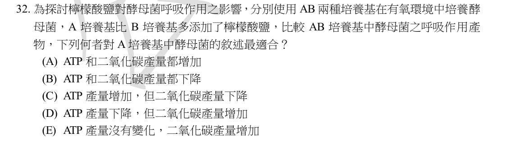
原卷PDF6 · 官方原答案PDF4 · 釋疑PDF8、釋疑PDF9
官方採計：A 原答案：A
維持原答案A
主分類：Ch09 Cellular Respiration and Fermentation
9.3 / The Citric Acid Cycle
目錄行575；條目起始印刷頁172；實際目錄 PDF37
次分類：Ch09 Cellular Respiration and Fermentation
9.6 / Regulation of Cellular Respiration via Feedback Mechanisms
目錄行614；條目起始印刷頁183；實際目錄 PDF37
次分類：Ch09 Cellular Respiration and Fermentation
9.4 / An Accounting of ATP Production by Cellular Respiration
目錄行588；條目起始印刷頁177；實際目錄 PDF37
主分類理由：9.3 / The Citric Acid Cycle：檸檬酸是檸檬酸循環中間產物，官方採計依其進入能量代謝的意圖。
次分類理由：9.6 / Regulation of Cellular Respiration via Feedback Mechanisms：檸檬酸與ATP回饋調控糖解，必須保留抑制PFK的教材機制；9.4 / An Accounting of ATP Production by Cellular Respiration：氧化磷酸化說明最終ATP供應。
科學說明：官方採A並在釋疑引入細胞成長及ATP需求增加的條件；原題未交代這些條件。Campbell指出累積檸檬酸可抑制PFK，不能由添加檸檬酸必然推出產ATP增加；實際取決於運輸、濃度、pH與代謝狀態。官方答案A與此條件不足分開保存，不擅改官方採計，也不把官方解釋當成受控實驗結果。
來源涵蓋範圍：本地Campbell正文支援所列分類原理；原題及同年度釋疑的假設與措辭限制另見科學說明。
教材正文：印刷172／PDF221、印刷173／PDF222、印刷177／PDF226、印刷178／PDF227、印刷183／PDF232、印刷184／PDF233
補充來源：本題未另列課本外來源
另行比較：比較以檸檬酸為底物與以檸檬酸為回饋抑制訊號的兩種方向。
主次三條目涵蓋循環、調控與ATP生成；分類已能確定，科學條件不足仍明文保留。
結論：證據確認，分類疑義已解決。完整覆核紀錄
Q33 · 39.5 / Defenses Against Pathogens 正式分類
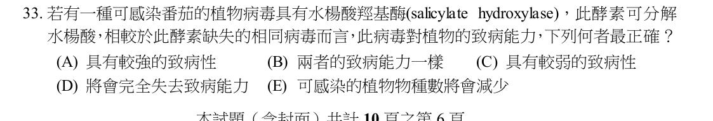
官方採計：A 原答案：A
維持原答案A
主分類：Ch39 Plant Responses to Internal and External Signals
39.5 / Defenses Against Pathogens
目錄行2596；條目起始印刷頁866；實際目錄 PDF45
主分類理由：39.5 / Defenses Against Pathogens：水楊酸參與系統性獲得抗性，移除訊號會削弱防禦。
次分類理由：無另列最小次條目；只以水楊酸防禦機制支持A，避免將多個不同層級結果混為必然。
科學說明：假想病毒能分解水楊酸，會削弱SAR而使感染更嚴重，採A。不能由此推出所有植物必滅絕，也不能由未滅絕推得病毒宿主範圍；官方對E的延伸說法與直接機制分開。
來源涵蓋範圍：本地Campbell正文支援所列分類原理；原題及同年度釋疑的假設與措辭限制另見科學說明。
教材正文：印刷866／PDF915、印刷867／PDF916
補充來源：本題未另列課本外來源
另行比較：比較植物防禦訊號減弱與病毒宿主範圍、植物族群存續。
只以水楊酸防禦機制支持A，避免將多個不同層級結果混為必然。
結論：證據確認，分類疑義已解決。完整覆核紀錄
Q34 · 20.3 / Cloning Plants: Single-Cell Cultures 正式分類
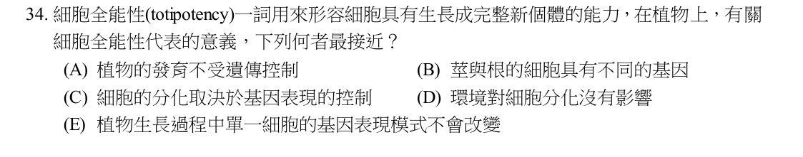
官方採計：C 原答案：C
維持原答案C
主分類：Ch20 DNA Tools and Biotechnology
20.3 / Cloning Plants: Single-Cell Cultures
目錄行1261；條目起始印刷頁428；實際目錄 PDF40
次分類：Ch35 Vascular Plant Structure, Growth, and Development
35.5 / Gene Expression and the Control of Cell Differentiation
目錄行2332；條目起始印刷頁778；實際目錄 PDF44
次分類：Ch18 Regulation of Gene Expression
18.2 / Differential Gene Expression
目錄行1120；條目起始印刷頁370；實際目錄 PDF39
主分類理由：20.3 / Cloning Plants: Single-Cell Cultures：由成熟細胞再生成植株的克隆實驗顯示基因組仍可支持多種分化命運。
次分類理由：35.5 / Gene Expression and the Control of Cell Differentiation：植物細胞分化條目提供發育背景；18.2 / Differential Gene Expression：差異基因表現解釋保留同一基因組卻有不同細胞功能。
科學說明：採C，許多已分化植物細胞保留全套遺傳資訊，可在適當條件再生；不表示每種成熟細胞永遠都能再生。官方引第11版印刷461，本地12版實據為428–429，兩版頁碼不混用。
來源涵蓋範圍：本地Campbell正文支援所列分類原理；原題及同年度釋疑的假設與措辭限制另見科學說明。
教材正文：印刷370／PDF419、印刷371／PDF420、印刷428／PDF477、印刷429／PDF478、印刷778／PDF827
補充來源：本題未另列課本外來源
另行比較：比較全能性、去分化與DNA序列改變，查核教材版本頁碼。
實驗證據為主，植物分化與差異表現為次，保留條件限制及版本差異。
結論：證據確認，分類疑義已解決。完整覆核紀錄
Q35 · 38.1 / The Angiosperm Life Cycle: An Overview 正式分類
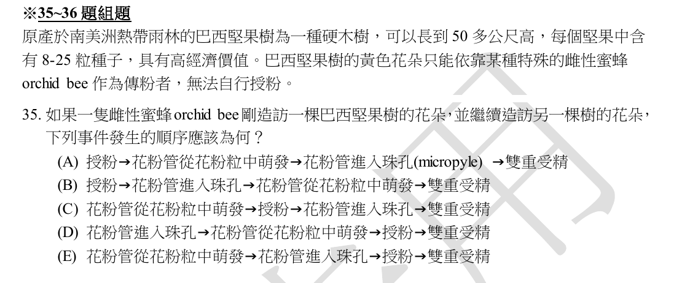
原卷PDF7 · 官方原答案PDF4 · 已核對生物釋疑PDF7下半部–9
官方採計：A 原答案：A
未列於已取得108生物釋疑PDF7下半部–9；依同年度原答案PDF4採計
主分類：Ch38 Angiosperm Reproduction and Biotechnology
38.1 / The Angiosperm Life Cycle: An Overview
目錄行2486；條目起始印刷頁826；實際目錄 PDF45
次分類：Ch38 Angiosperm Reproduction and Biotechnology
38.1 / Methods of Pollination
目錄行2483；條目起始印刷頁825；實際目錄 PDF45
次分類：Ch38 Angiosperm Reproduction and Biotechnology
38.1 / Seed Development and Structure
目錄行2495；條目起始印刷頁828；實際目錄 PDF45
主分類理由：38.1 / The Angiosperm Life Cycle: An Overview：花粉到達柱頭、萌發並長管到珠孔、再雙受精，是被子植物生活史順序。
次分類理由：38.1 / Methods of Pollination：授粉條目判別花粉到柱頭的起點；38.1 / Seed Development and Structure：種子發育承接受精後的胚與胚乳。
科學說明：採A：授粉→花粉萌發/花粉管生長→經珠孔→雙受精。巴西堅果與傳粉者的共用背景完整保留為題設，不把背景每一生態敘述冒稱已由教材確認。
來源涵蓋範圍：本地Campbell正文支援所列分類原理；原題及同年度釋疑的假設與措辭限制另見科學說明。
教材正文：印刷825／PDF874、印刷826／PDF875、印刷827／PDF876、印刷828／PDF877
補充來源：本題未另列課本外來源
另行比較：比較授粉、受精及種子形成的先後，檢查共用背景裁圖。
按真實生活史與授粉條目分類；雙受精正文小標不另造目錄葉條目。
結論：證據確認，分類疑義已解決。完整覆核紀錄
Q36 · 38.1 / Methods of Pollination 正式分類
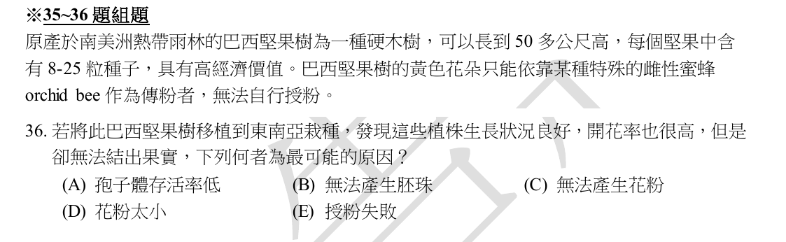
原卷PDF7 · 官方原答案PDF4 · 已核對生物釋疑PDF7下半部–9
官方採計：E 原答案：E
未列於已取得108生物釋疑PDF7下半部–9；依同年度原答案PDF4採計
主分類：Ch38 Angiosperm Reproduction and Biotechnology
38.1 / Methods of Pollination
目錄行2483；條目起始印刷頁825；實際目錄 PDF45
次分類：Ch38 Angiosperm Reproduction and Biotechnology
38.2 / Mechanisms That Prevent Self-Fertilization
目錄行2514；條目起始印刷頁834；實際目錄 PDF45
主分類理由：38.1 / Methods of Pollination：植株正常生長並開花卻缺乏結果，題設最直接指向有效授粉者不足。
次分類理由：38.2 / Mechanisms That Prevent Self-Fertilization：自交不親和及異交機制說明有花粉不等於完成有效授粉。
科學說明：採E授粉失敗；缺乏有效授粉昆蟲是共用背景下的可能原因。依共用背景推理，不能僅由不結果斷言無胚珠、無花粉或完全不能進行光合作用；也不把考題推斷當成田間實驗已排除全部其他因素。
來源涵蓋範圍：本地Campbell正文支援所列分類原理；原題及同年度釋疑的假設與措辭限制另見科學說明。
教材正文：印刷825／PDF874、印刷826／PDF875、印刷834／PDF883、印刷835／PDF884
補充來源：本題未另列課本外來源
Q37 · 14.3 / Extending Mendelian Genetics for Two or More Genes 正式分類
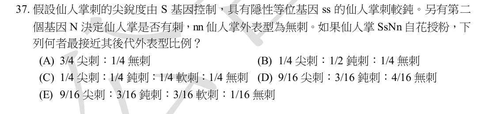
原卷PDF7 · 官方原答案PDF4 · 已核對生物釋疑PDF7下半部–9
官方採計：D 原答案：D
未列於已取得108生物釋疑PDF7下半部–9；依同年度原答案PDF4採計
主分類：Ch14 Mendel and the Gene Idea
14.3 / Extending Mendelian Genetics for Two or More Genes
目錄行895；條目起始印刷頁281；實際目錄 PDF38
次分類：Ch14 Mendel and the Gene Idea
14.1 / The Law of Independent Assortment
目錄行875；條目起始印刷頁274；實際目錄 PDF38
主分類理由：14.3 / Extending Mendelian Genetics for Two or More Genes：一基因座的隱性同型會遮蔽另一基因的表現，產生隱性上位作用比例。
次分類理由：14.1 / The Law of Independent Assortment：兩基因的獨立分配建立兩組3:1，組合後再依遮蔽規則合併。
科學說明：以nn無刺且遮蔽S/s、兩基因獨立分配的考題模型，得9尖刺:3鈍刺:4無刺，採D。9:3:3:1是未合併的二因子類別，不能直接當作最後三種表型；獨立分配屬比例成立的假設。
來源涵蓋範圍：本地Campbell正文支援所列分類原理；原題及同年度釋疑的假設與措辭限制另見科學說明。
教材正文：印刷274／PDF323、印刷275／PDF324、印刷281／PDF330、印刷282／PDF331
補充來源：本題未另列課本外來源
另行比較：比較單基因顯隱性與兩基因上位作用，重新合併nn類別。
由9、3、3、1合併兩個nn類得9、3、4，主分類上位作用。
結論：證據確認，分類疑義已解決。完整覆核紀錄
Q38 · 38.3 / Plant Breeding 正式分類
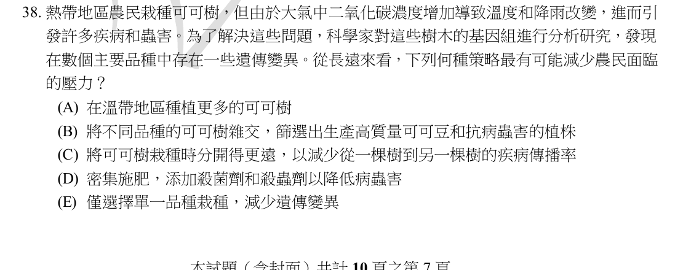
原卷PDF7 · 官方原答案PDF4 · 已核對生物釋疑PDF7下半部–9
官方採計：B 原答案：B
未列於已取得108生物釋疑PDF7下半部–9；依同年度原答案PDF4採計
主分類：Ch38 Angiosperm Reproduction and Biotechnology
38.3 / Plant Breeding
目錄行2524；條目起始印刷頁837；實際目錄 PDF45
次分類：Ch23 The Evolution of Populations
23.1 / Genetic Variation
目錄行1432；條目起始印刷頁487；實際目錄 PDF41
主分類理由：38.3 / Plant Breeding：以不同品種雜交並選擇目標性狀是傳統植物育種。
次分類理由：23.1 / Genetic Variation：既有遺傳變異是選育耐受性狀的材料基礎。
科學說明：採B，跨品種雜交與選拔可組合有利變異，不必然需要外源轉基因。此是育種策略，不宣稱任何指定後代已經完成氣候或田間耐受測試。
來源涵蓋範圍：本地Campbell正文支援所列分類原理；原題及同年度釋疑的假設與措辭限制另見科學說明。
教材正文：印刷487／PDF536、印刷488／PDF537、印刷836／PDF885、印刷837／PDF886
補充來源：本題未另列課本外來源
另行比較：比較傳統選育與基因工程，避免按環境情境錯分成氣候生態章。
教材38.3傳統植物育種直接承載方法，23.1遺傳變異保留為次。
結論：證據確認，分類疑義已解決。完整覆核紀錄
Q39 · 15.3 / Genetic Recombination and Linkage 正式分類
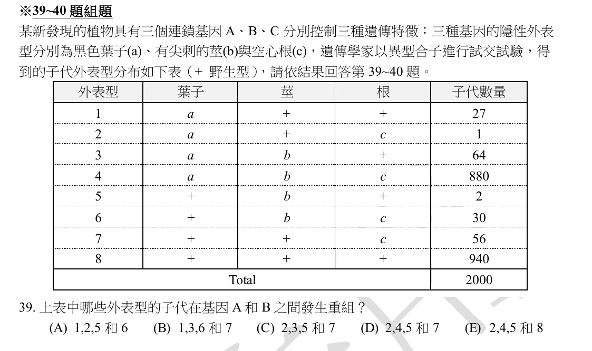
原卷PDF8 · 官方原答案PDF4 · 已核對生物釋疑PDF7下半部–9
官方採計：A 原答案：A
未列於已取得108生物釋疑PDF7下半部–9；依同年度原答案PDF4採計
主分類：Ch15 The Chromosomal Basis of Inheritance
15.3 / Genetic Recombination and Linkage
目錄行958；條目起始印刷頁302；實際目錄 PDF39
次分類：Ch15 The Chromosomal Basis of Inheritance
15.3 / Mapping the Distance Between Genes Using Recombination Data: Scientific Inquiry
目錄行961；條目起始印刷頁305；實際目錄 PDF39
主分類理由：15.3 / Genetic Recombination and Linkage：測交中以數量最多的親本型為基準，辨識a與b的重組組合。
次分類理由：15.3 / Mapping the Distance Between Genes Using Recombination Data: Scientific Inquiry：這些重組類也會用於下一題遺傳圖距，保留圖譜條目。
科學說明：原表abc=880、+++=940為親本型；a與b反式組合出現在表列1、2、5、6，採A。C基因狀態不改變a/b是否重組；表格與Q40共用內容須完整保存。
來源涵蓋範圍：本地Campbell正文支援所列分類原理；原題及同年度釋疑的假設與措辭限制另見科學說明。
教材正文：印刷302／PDF351、印刷303／PDF352、印刷304／PDF353、印刷305／PDF354、印刷306／PDF355
補充來源：本題未另列課本外來源
Q40 · 15.3 / Mapping the Distance Between Genes Using Recombination Data: Scientific Inquiry 正式分類
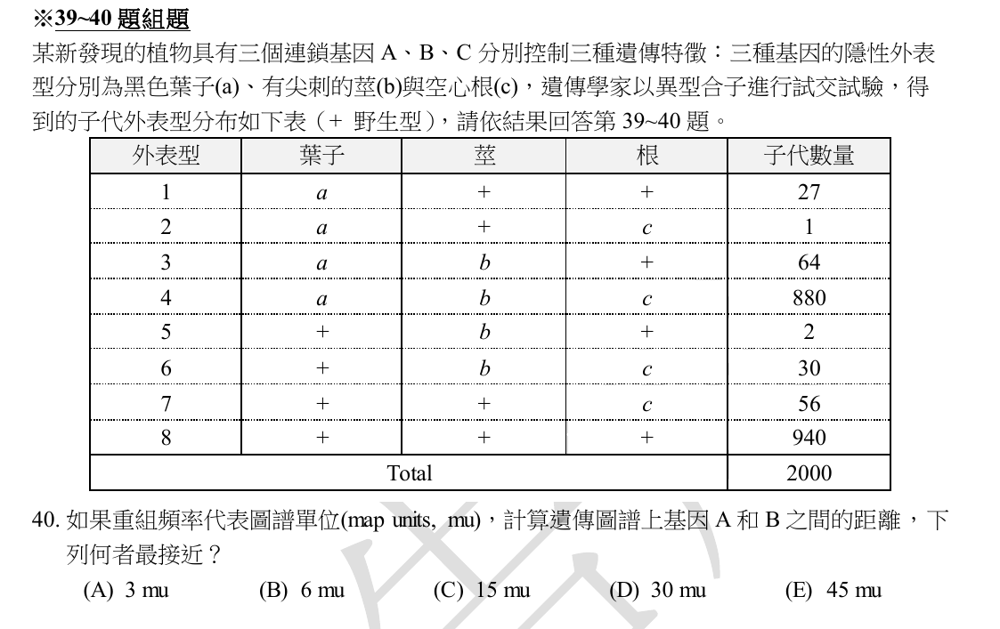
原卷PDF8 · 官方原答案PDF4 · 已核對生物釋疑PDF7下半部–9
官方採計：A 原答案：A
未列於已取得108生物釋疑PDF7下半部–9；依同年度原答案PDF4採計
主分類：Ch15 The Chromosomal Basis of Inheritance
15.3 / Mapping the Distance Between Genes Using Recombination Data: Scientific Inquiry
目錄行961；條目起始印刷頁305；實際目錄 PDF39
次分類：Ch15 The Chromosomal Basis of Inheritance
15.3 / Genetic Recombination and Linkage
目錄行958；條目起始印刷頁302；實際目錄 PDF39
主分類理由：15.3 / Mapping the Distance Between Genes Using Recombination Data: Scientific Inquiry：由a/b重組四類共60隻除以2000隻，估算短距離圖譜單位。
次分類理由：15.3 / Genetic Recombination and Linkage：重組後代辨識是計算圖距所需前置。
科學說明：重組數=27+1+2+30=60，總2000，重組率3%，約3 map units，採A。兩個極少數類也必須計入；圖距不是實體DNA的鹼基對距離。
來源涵蓋範圍：本地Campbell正文支援所列分類原理；原題及同年度釋疑的假設與措辭限制另見科學說明。
教材正文：印刷302／PDF351、印刷303／PDF352、印刷304／PDF353、印刷305／PDF354、印刷306／PDF355
補充來源：本題未另列課本外來源
Q41 · 6.5 / Mitochondria: Chemical Energy Conversion 正式分類
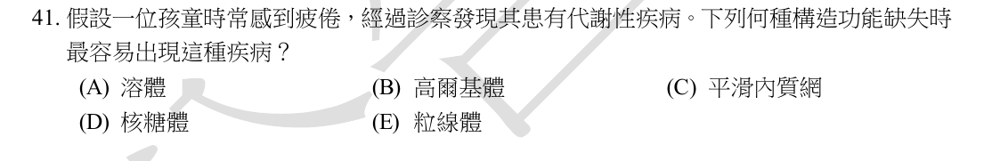
官方採計：E 原答案：E
維持原答案E
主分類：Ch06 A Tour of the Cell
6.5 / Mitochondria: Chemical Energy Conversion
目錄行365；條目起始印刷頁110；實際目錄 PDF36
次分類：Ch06 A Tour of the Cell
6.4 / Lysosomes: Digestive Compartments
目錄行349；條目起始印刷頁107；實際目錄 PDF36
次分類：Ch09 Cellular Respiration and Fermentation
9.4 / An Accounting of ATP Production by Cellular Respiration
目錄行588；條目起始印刷頁177；實際目錄 PDF37
主分類理由：6.5 / Mitochondria: Chemical Energy Conversion：易疲倦與能量代謝的題設意圖對應粒線體產生ATP。
次分類理由：6.4 / Lysosomes: Digestive Compartments：溶體也涉及代謝性遺傳病，保留題幹不具專一性的備選胞器；9.4 / An Accounting of ATP Production by Cellular Respiration：氧化磷酸化補充ATP供應機制。
科學說明：官方採E粒線體；但僅憑易疲倦與代謝性疾病不能唯一診斷粒線體異常，溶體等也可能相關。釋疑將題文延伸為代謝症候群的說法照留為官方解釋，不把它當成原題已提供的確診資訊。
來源涵蓋範圍：本地Campbell正文支援所列分類原理；原題及同年度釋疑的假設與措辭限制另見科學說明。
教材正文：印刷107／PDF156、印刷108／PDF157、印刷110／PDF159、印刷177／PDF226、印刷178／PDF227
補充來源：本題未另列課本外來源
另行比較：比較粒線體能量障礙與溶體代謝病，核對題文與釋疑新增詞。
主分類依官方考點，次條目保留確有相關的溶體；科學說明明示無法唯一診斷。
結論：證據確認，分類疑義已解決。完整覆核紀錄
Q42 · 46.3 / Gametogenesis 正式分類
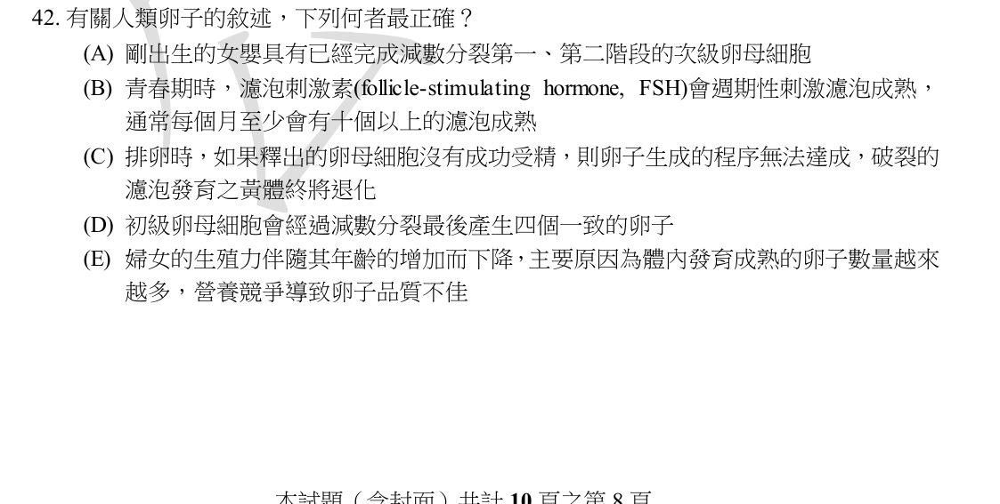
原卷PDF8 · 官方原答案PDF4 · 已核對生物釋疑PDF7下半部–9
官方採計：C 原答案：C
未列於已取得108生物釋疑PDF7下半部–9；依同年度原答案PDF4採計
主分類：Ch46 Animal Reproduction
46.3 / Gametogenesis
目錄行3091；條目起始印刷頁1027；實際目錄 PDF48
次分類：Ch46 Animal Reproduction
46.4 / Hormonal Control of Female Reproductive Cycles
目錄行3104；條目起始印刷頁1032；實際目錄 PDF48
主分類理由：46.3 / Gametogenesis：卵細胞形成的減數分裂停滯及受精後才完成第二分裂決定正誤。
次分類理由：46.4 / Hormonal Control of Female Reproductive Cycles：未受精時黃體退化及生殖週期激素變化提供同題另一半機制。
科學說明：採C；未受精的次級卵母細胞通常不完成減II，且黃體退化。出生時初級卵母細胞停在減I前期，形成極體是不對稱分裂；不能把多個濾泡啟動都當成正常同時排出多顆成熟卵。
來源涵蓋範圍：本地Campbell正文支援所列分類原理；原題及同年度釋疑的假設與措辭限制另見科學說明。
教材正文：印刷1027／PDF1076、印刷1028／PDF1077、印刷1029／PDF1078、印刷1032／PDF1081、印刷1033／PDF1082、印刷1034／PDF1083
補充來源：本題未另列課本外來源
Q43 · 39.5 / Defenses Against Herbivores 正式分類
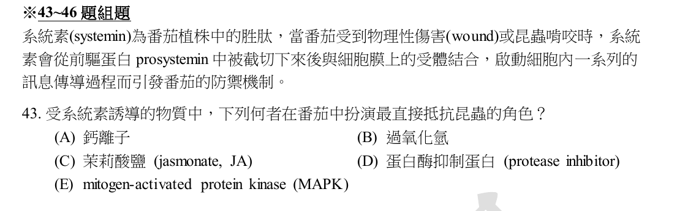
原卷PDF9 · 官方原答案PDF4 · 已核對生物釋疑PDF7下半部–9
官方採計：D 原答案：D
未列於已取得108生物釋疑PDF7下半部–9；依同年度原答案PDF4採計
主分類：Ch39 Plant Responses to Internal and External Signals
39.5 / Defenses Against Herbivores
目錄行2599；條目起始印刷頁867；實際目錄 PDF45
次分類：Ch39 Plant Responses to Internal and External Signals
39.1 / Response
目錄行2547；條目起始印刷頁845；實際目錄 PDF45
主分類理由：39.5 / Defenses Against Herbivores：蛋白酶抑制劑直接抑制食草昆蟲消化蛋白質，是傷害誘導防禦的效應物。
次分類理由：39.1 / Response：細胞反應條目把最後防禦產物與上游訊號過程分開。
科學說明：採D protease inhibitors；Ca2+、jasmonate與MAPK偏上游訊號，不是本題直接降低消化的主要效應物。Campbell提供食草防禦框架，番茄蛋白酶抑制劑的抗消化作用另由原始研究支援。
來源涵蓋範圍：本地Campbell支援所列分類框架；具名外部事件／機制／科學界線由列示來源補充，實讀範圍見來源紀錄。
教材正文：印刷845／PDF894、印刷867／PDF916、印刷868／PDF917
補充來源：S06
另行比較：比較直接效應物與同一路徑的受體、第二訊使、激素及激酶。
真實植物食草防禦葉條目為主，不把上游訊號單列為最直接答案。
結論：證據確認，分類疑義已解決。完整覆核紀錄
Q44 · 11.3 / Small Molecules and Ions as Second Messengers 正式分類
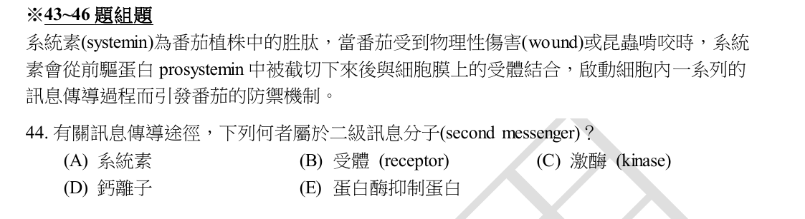
原卷PDF9 · 官方原答案PDF4 · 已核對生物釋疑PDF7下半部–9
官方採計：D 原答案：D
未列於已取得108生物釋疑PDF7下半部–9；依同年度原答案PDF4採計
主分類：Ch11 Cell Communication
11.3 / Small Molecules and Ions as Second Messengers
本地文字目錄：Small Molecules and Second Messengers；本輪實看PDF目錄採完整原名：Small Molecules and Ions as Second Messengers。原來源檔不改。 目錄行724；條目起始印刷頁223；實際目錄 PDF38
次分類：Ch39 Plant Responses to Internal and External Signals
39.1 / Transduction
目錄行2544；條目起始印刷頁844；實際目錄 PDF45
主分類理由：11.3 / Small Molecules and Ions as Second Messengers：Ca2+是細胞內常見的小分子/離子第二訊使。
次分類理由：39.1 / Transduction：植物訊號轉導連結題設的防禦刺激。
科學說明：採D Ca2+；systemin屬外來第一訊號，受體與MAPK是蛋白元件。不要因都參與同一路徑而把所有元件一律稱第二訊使。
來源涵蓋範圍：本地Campbell正文支援所列分類原理；原題及同年度釋疑的假設與措辭限制另見科學說明。
教材正文：印刷224／PDF273、印刷225／PDF274、印刷844／PDF893、印刷845／PDF894
補充來源：本題未另列課本外來源
Q45 · 39.5 / Defenses Against Herbivores 正式分類
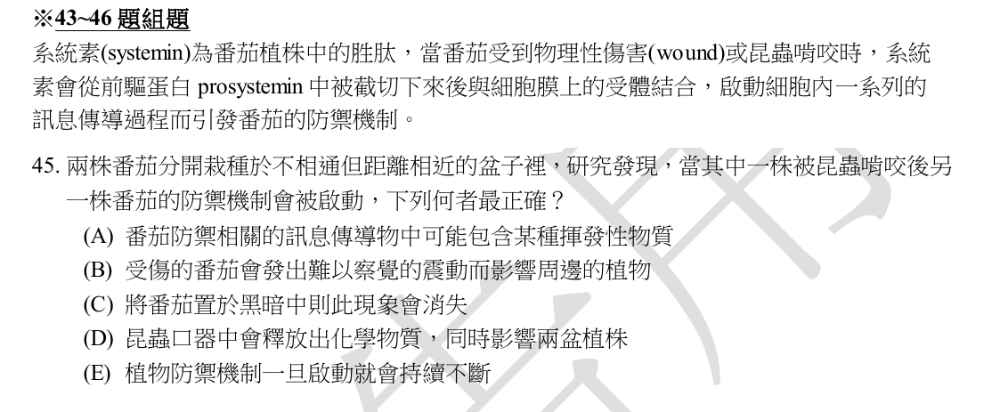
原卷PDF9 · 官方原答案PDF4 · 已核對生物釋疑PDF7下半部–9
官方採計：A 原答案：A
未列於已取得108生物釋疑PDF7下半部–9；依同年度原答案PDF4採計
主分類：Ch39 Plant Responses to Internal and External Signals
39.5 / Defenses Against Herbivores
目錄行2599；條目起始印刷頁867；實際目錄 PDF45
主分類理由：39.5 / Defenses Against Herbivores：相鄰但未接觸植株啟動防禦，符合揮發性物質傳訊的食草防禦機制。
次分類理由：無另列最小次條目；以植物食草防禦條目完成分類，補充研究支持可能機制而不把單一化合物硬填為題目實測物。
科學說明：採A植物可釋出揮發性物質傳遞訊息；空氣中methyl jasmonate誘導番茄蛋白酶抑制劑有原始研究。題設本身不能唯一辨認分子，也不能推出訊號永久有效或任何環境均相同。
來源涵蓋範圍：本地Campbell支援所列分類框架；具名外部事件／機制／科學界線由列示來源補充，實讀範圍見來源紀錄。
教材正文：印刷867／PDF916、印刷868／PDF917
補充來源：S07
另行比較：比較空氣傳訊與必須接觸/共根才傳訊，查驗揮發性機制。
以植物食草防禦條目完成分類，補充研究支持可能機制而不把單一化合物硬填為題目實測物。
結論：證據確認，分類疑義已解決。完整覆核紀錄
Q46 · 36.2 / Short-Distance Transport of Solutes Across Plasma Membranes 正式分類
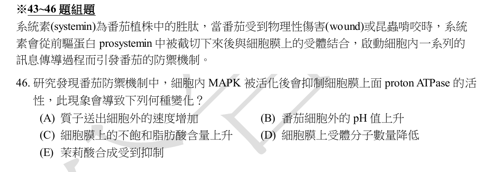
原卷PDF9 · 官方原答案PDF4 · 已核對生物釋疑PDF7下半部–9
官方採計：B 原答案：B
未列於已取得108生物釋疑PDF7下半部–9；依同年度原答案PDF4採計
主分類：Ch36 Resource Acquisition and Transport in Vascular Plants
36.2 / Short-Distance Transport of Solutes Across Plasma Membranes
目錄行2362；條目起始印刷頁788；實際目錄 PDF45
次分類：Ch11 Cell Communication
11.3 / Protein Phosphorylation and Dephosphorylation
目錄行721；條目起始印刷頁222；實際目錄 PDF38
次分類：Ch39 Plant Responses to Internal and External Signals
39.5 / Defenses Against Herbivores
目錄行2599；條目起始印刷頁867；實際目錄 PDF45
主分類理由：36.2 / Short-Distance Transport of Solutes Across Plasma Membranes：抑制將H+排到細胞外的質子幫浦，會使外側酸化減少。
次分類理由：11.3 / Protein Phosphorylation and Dephosphorylation：磷酸化反應串聯題設MAPK訊號；39.5 / Defenses Against Herbivores：植物食草防禦是刺激背景。
科學說明：依題設MAPK抑制proton ATPase，H+外排下降，細胞外pH上升，採B。2019原始研究觀察早期PLL5使H+-ATPase去磷酸化與培養液鹼化，較晚MPK2再磷酸化使幫浦恢復活性，和原題MAPK抑制的直接因果不同；題設與更細的研究機制分開。
來源涵蓋範圍：本地Campbell支援所列分類框架；具名外部事件／機制／科學界線由列示來源補充，實讀範圍見來源紀錄。
教材正文：印刷137／PDF186、印刷138／PDF187、印刷222／PDF271、印刷223／PDF272、印刷788／PDF837、印刷867／PDF916、印刷868／PDF917
補充來源：S08
另行比較：比較細胞內外pH方向及題設直接因果與實驗已辨識的中介機制。
從幫浦運輸方向獨立推得B；保存原題MAPK假設而不把它擴大成普遍規則。
結論：證據確認，分類疑義已解決。完整覆核紀錄
Q47 · 36.2 / Short-Distance Transport of Water Across Plasma Membranes 正式分類
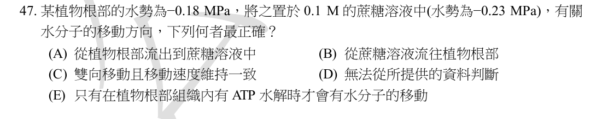
原卷PDF9 · 官方原答案PDF4 · 已核對生物釋疑PDF7下半部–9
官方採計：A 原答案：A
未列於已取得108生物釋疑PDF7下半部–9；依同年度原答案PDF4採計
主分類：Ch36 Resource Acquisition and Transport in Vascular Plants
36.2 / Short-Distance Transport of Water Across Plasma Membranes
目錄行2365；條目起始印刷頁788；實際目錄 PDF45
主分類理由：36.2 / Short-Distance Transport of Water Across Plasma Membranes：水的淨移動由較高水勢流向較低水勢。
次分類理由：無另列最小次條目；重新比較−0.18與−0.23的大小，方向明確。
科學說明：細胞內−0.18MPa高於外界−0.23MPa，水淨流出，採A。微觀分子仍可雙向移動，與淨通量不同；此滲透不需直接用ATP驅動。
來源涵蓋範圍：本地Campbell正文支援所列分類原理；原題及同年度釋疑的假設與措辭限制另見科學說明。
教材正文：印刷788／PDF837、印刷789／PDF838、印刷790／PDF839、印刷791／PDF840
補充來源：本題未另列課本外來源
Q48 · 10.3 / A Comparison of Chemiosmosis in Chloroplasts and Mitochondria 正式分類
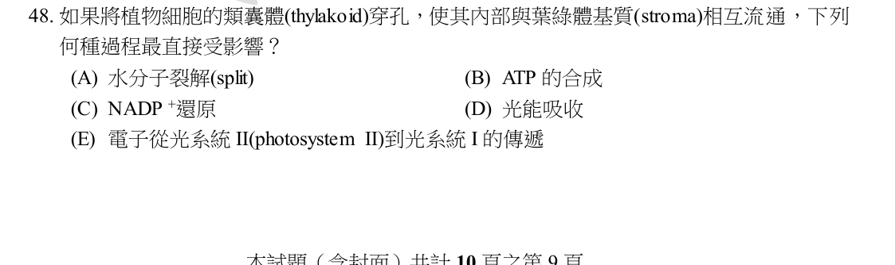
原卷PDF9 · 官方原答案PDF4 · 已核對生物釋疑PDF7下半部–9
官方採計：B 原答案：B
未列於已取得108生物釋疑PDF7下半部–9；依同年度原答案PDF4採計
主分類：Ch10 Photosynthesis
10.3 / A Comparison of Chemiosmosis in Chloroplasts and Mitochondria
目錄行662；條目起始印刷頁199；實際目錄 PDF37
次分類：Ch09 Cellular Respiration and Fermentation
9.4 / Chemiosmosis: The Energy-Coupling Mechanism
目錄行585；條目起始印刷頁175；實際目錄 PDF37
主分類理由：10.3 / A Comparison of Chemiosmosis in Chloroplasts and Mitochondria：類囊體膜破孔使跨膜質子梯度消散，最直接降低光合ATP合成。
次分類理由：9.4 / Chemiosmosis: The Energy-Coupling Mechanism：粒線體化學滲透條目提供共同的梯度耦合原理。
科學說明：採B ATP合成下降；直接受破壞的是膜維持梯度的能力，不能把破孔立即等同色素吸光或水分子光解本身消失。
來源涵蓋範圍：本地Campbell正文支援所列分類原理；原題及同年度釋疑的假設與措辭限制另見科學說明。
教材正文：印刷175／PDF224、印刷176／PDF225、印刷199／PDF248、印刷200／PDF249、印刷201／PDF250
補充來源：本題未另列課本外來源
另行比較：比較光反應各步驟及類囊體膜完整性的直接作用。
以光合化學滲透為主，呼吸化學滲透為次，避免把兩胞器頁碼或位置混用。
結論：證據確認，分類疑義已解決。完整覆核紀錄
Q49 · 40.3 / Balancing Heat Loss and Gain 正式分類
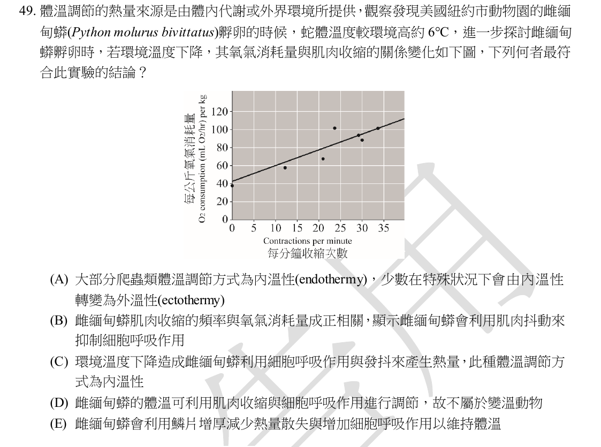
原卷PDF10 · 官方原答案PDF4 · 已核對生物釋疑PDF7下半部–9
官方採計：C 原答案：C
未列於已取得108生物釋疑PDF7下半部–9；依同年度原答案PDF4採計
主分類：Ch40 Basic Principles of Animal Form and Function
40.3 / Balancing Heat Loss and Gain
目錄行2649；條目起始印刷頁885；實際目錄 PDF46
次分類：Ch40 Basic Principles of Animal Form and Function
40.3 / Endothermy and Ectothermy
目錄行2643；條目起始印刷頁884；實際目錄 PDF46
次分類：Ch40 Basic Principles of Animal Form and Function
40.3 / Variation in Body Temperature
目錄行2646；條目起始印刷頁884；實際目錄 PDF46
主分類理由：40.3 / Balancing Heat Loss and Gain：孵卵蟒蛇肌肉收縮與耗氧增加的圖形支持顫抖產熱。
次分類理由：40.3 / Endothermy and Ectothermy：內溫與外溫依熱的來源區分；40.3 / Variation in Body Temperature：變溫與恆溫依體溫變動區分，兩軸不能混為一談。
科學說明：採C，圖示正相關與情境支持孵卵時的shivering endothermy。本地12印刷888有同一研究圖及結果，印刷887說明調節產熱；不是所有爬蟲類均內溫，也不是只靠體溫恆定便能判定熱源。原題歷史物種名與教材記載照留。
來源涵蓋範圍：本地Campbell正文支援所列分類原理；原題及同年度釋疑的假設與措辭限制另見科學說明。
教材正文：印刷884／PDF933、印刷885／PDF934、印刷886／PDF935、印刷887／PDF936、印刷888／PDF937
補充來源：本題未另列課本外來源
另行比較：比較行為保溫、顫抖產熱與恆溫的不同判準，核對本地同一研究圖。
正文圖40.16直接支援收縮—耗氧—產熱鏈；三個同章最小條目均保留但章級只計一次。
結論：證據確認，分類疑義已解決。完整覆核紀錄
Q50 · 20.1 / Using Restriction Enzymes to Make a Recombinant DNA Plasmid 正式分類
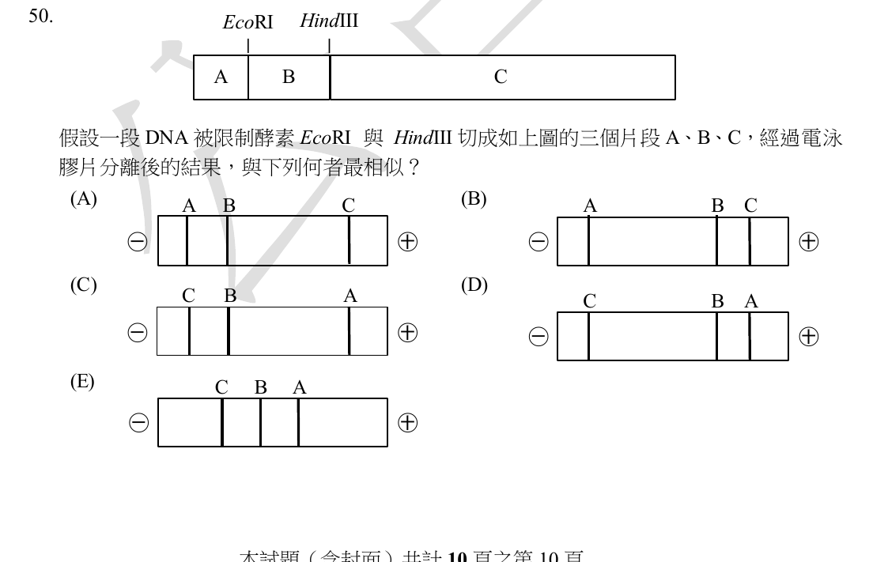
原卷PDF10 · 官方原答案PDF4 · 已核對生物釋疑PDF7下半部–9
官方採計：D 原答案：D
未列於已取得108生物釋疑PDF7下半部–9；依同年度原答案PDF4採計
主分類：Ch20 DNA Tools and Biotechnology
20.1 / Using Restriction Enzymes to Make a Recombinant DNA Plasmid
本地文字目錄：Using Restriction Enzymes to Make a Recombinant Plasmid；本輪實看PDF目錄採完整原名：Using Restriction Enzymes to Make a Recombinant DNA Plasmid。原來源檔不改。 目錄行1238；條目起始印刷頁419；實際目錄 PDF40
主分類理由：20.1 / Using Restriction Enzymes to Make a Recombinant DNA Plasmid：DNA片段以凝膠電泳按長度分離，短片段朝正極移動較遠。
次分類理由：無另列最小次條目；原圖比例與電泳原理共同支持D；用真實重組質體最小條目收納其電泳技術內容。
科學說明：原圖A最短、B次短、C明顯較長，DNA負電向+極，應C近起點、B與A在遠端且A更遠；D最符合原片段相對長度與間距。C選項雖順序近似但間距不符；不編造原圖未標的精確鹼基對長度。教材電泳圖在限制酶建立重組質體的最小條目正文內，不是PCR條目，也不自造Gel Electrophoresis目錄葉節點。
來源涵蓋範圍：本地Campbell正文支援所列分類原理；原題及同年度釋疑的假設與措辭限制另見科學說明。
教材正文：印刷419／PDF468、印刷420／PDF469、印刷421／PDF470
補充來源：本題未另列課本外來源
另行比較：比較五個凝膠圖的極性、條帶排序與相對距離，確認電泳正文的實際父概念20.1。
原圖比例與電泳原理共同支持D；用真實重組質體最小條目收納其電泳技術內容。
結論：證據確認，分類疑義已解決。完整覆核紀錄
目前篩選沒有符合的題目；本年度總數仍為50題。
補充來源
查證日期：2026-09-09。使用原始研究摘要、官方資料與作者教材，不宣稱所有出版商全文已取得。詳細界線見來源紀錄。
- S01 Cooper 2000 The Cell：Eukaryotic RNA Polymerases；原始Pol III研究
真核核內Pol III轉錄5S rRNA與tRNA，Pol I製作28S/18S/5.8S前驅物；補足Campbell只概述聚合酶的範圍。
實讀範圍：NCBI Bookshelf章節開頁閱讀RNA聚合酶段落與I/III段；1974研究只實讀搜尋提供的結論，PubMed開頁遭驗證頁，不宣稱讀全文。
原始來源1 · 原始來源2 - S02 University of Leeds 2019：Oxygen linked with the boom and bust of early animal evolution
研究團隊以同位素及模型分析寒武紀氧氣與動物演化的連結；不能由此證明現代哺乳類可以在寒武紀存活。
實讀範圍：大學研究團隊新聞開頁閱讀方法、氧氣推估與限制；未取得其研究原始數據。
原始來源1 - S03 Cooper 2000 Mitochondria；Brown 2002 Genomes
哺乳類粒線體DNA含13蛋白、22tRNA、2rRNA，總37；人類約16569bp。rRNA與核糖體蛋白基因須區分。
實讀範圍：Cooper章節開頁閱讀粒線體遺傳系統段落；Brown具體數字由搜尋回傳的教材段落核對，未下載整書。
原始來源1 · 原始來源2 - S04 Knowles 2009 Statistical Phylogeography
親緣地理研究遺傳變異的空間、時間與歷史過程；補充本地目錄未單列的專名，分類仍使用真實親緣樹應用與生物地理條目。
實讀範圍：出版社搜尋回傳摘要及作者資訊；出版社開頁失敗，不宣稱取得全文。
原始來源1 - S05 Levin et al. 1981：caffeine、sperm motility與cAMP phosphodiesterase
原始體外動力學顯示咖啡因可抑制PDE，但抑制與運動反應所需濃度不同；不能直接把一般飲用效果歸因於PDE抑制。
實讀範圍：PubMed開頁完整摘要，特別比較濃度與Ki；未讀出版商全文或將此精子實驗直接當成所有人體細胞。
原始來源1 - S06 A Novel Function for the Cathepsin D Inhibitor in Tomato
番茄傷害誘導的蛋白酶抑制劑可干擾昆蟲消化；該研究重新界定JIP21/TCI21為chymotrypsin抑制劑，並驗證幼蟲生長/死亡影響。
實讀範圍：PMC開頁閱讀摘要、引言的消化酵素機制、酵素測試段與討論；未逐圖重算原始實驗數據。
原始來源1 - S07 Farmer et al. 1992：Regulation of expression of proteinase inhibitor genes by methyl jasmonate and jasmonic acid
空氣中methyl jasmonate可誘導番茄葉片蛋白酶抑制劑I/II；支持揮發性訊號機制，不證明原考題一定使用此單一化合物。
實讀範圍：搜尋回傳原始研究摘要；PubMed開頁無有效內容，PMC開頁驗證頁，未讀全文。
原始來源1 · 原始來源2 - S08 Haj Ahmad et al. 2019：The Systemin Signaling Cascade As Derived from Time Course Analyses of the Systemin-responsive Phosphoproteome
早期PLL5使LHA1去磷酸化，導致培養液鹼化；研究另見MPK2較晚再磷酸化並恢復H+-ATPase活性，不能將原題MAPK抑制的假設當作這項實驗的同一因果。
實讀範圍：PMC搜尋回傳完整摘要、Highlights、結論與相關試驗/討論節錄；PubMed開頁驗證頁。未聲稱全部正文及原始質譜已重算。此2019-05-28研究晚於108.5.15釋疑，僅作本輪科學補查。
原始來源1 · 原始來源2 - S09 Bellot & Renner：The Plastomes of Two Species in the Endoparasite Genus Pilostyles
研究的兩種Pilostyles生活在豆科宿主內；同篇比較植物內寄生和外寄生類型，支援植物亦有兩類寄生的判斷。
實讀範圍：PMC搜尋實讀摘要相關內容與內/外寄生比較段落；開頁為驗證頁，未宣稱整篇全文已檢查。
原始來源1